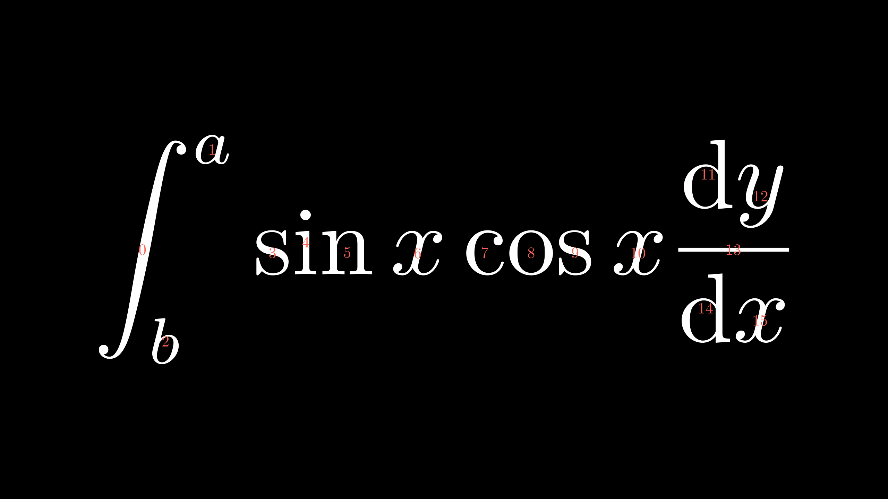
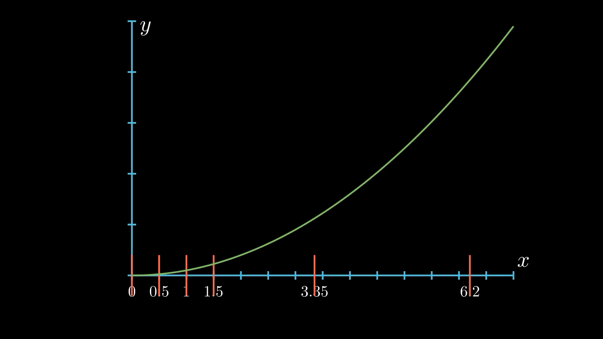
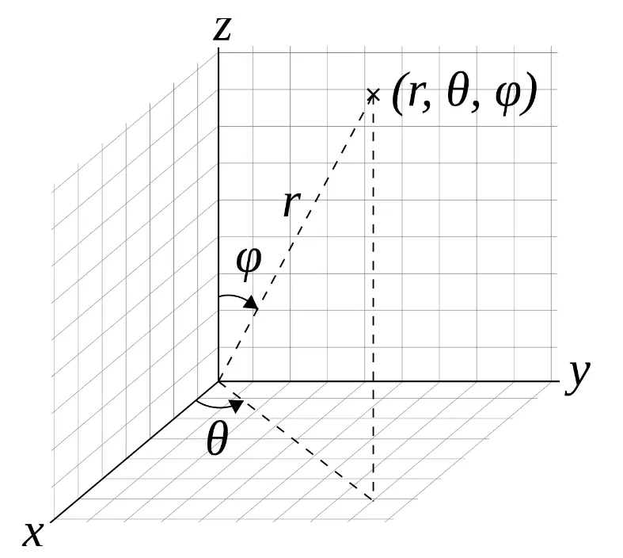
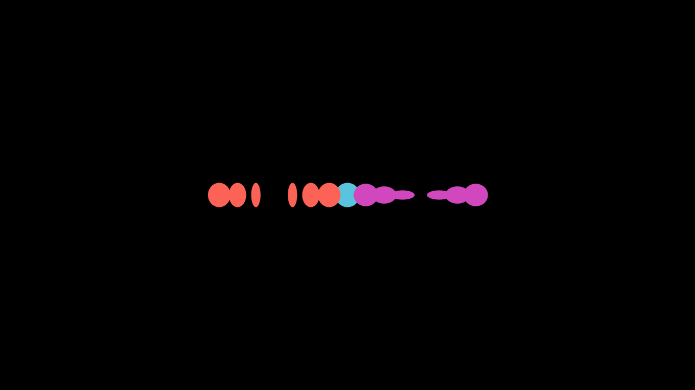
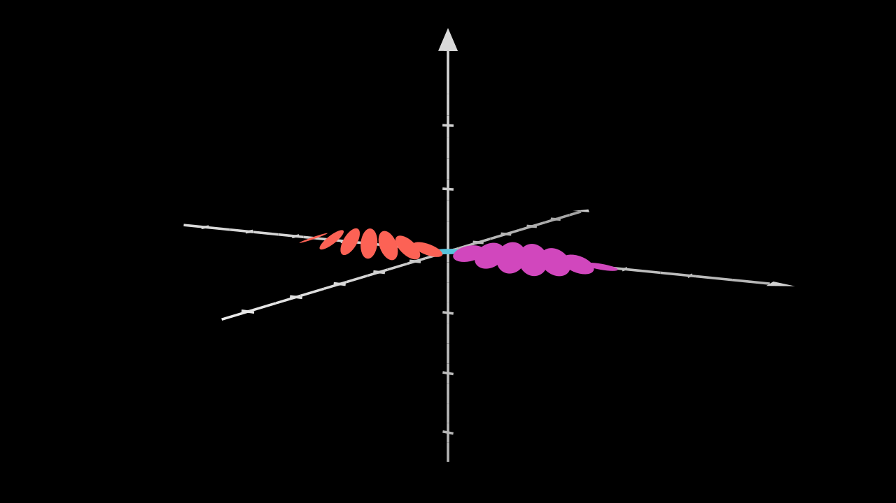
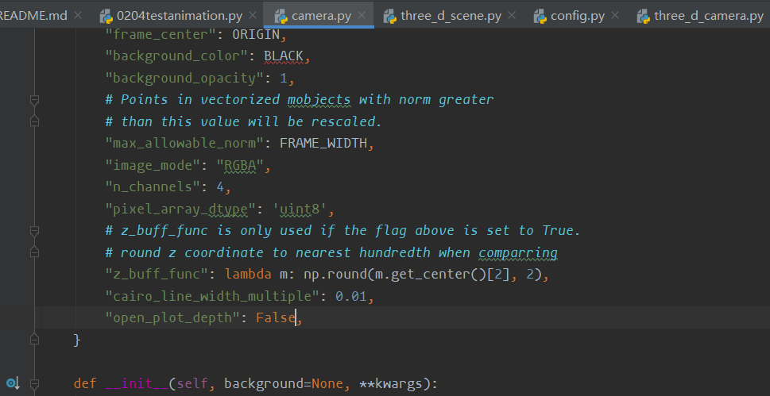
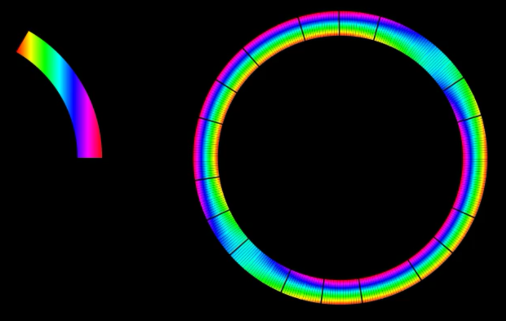
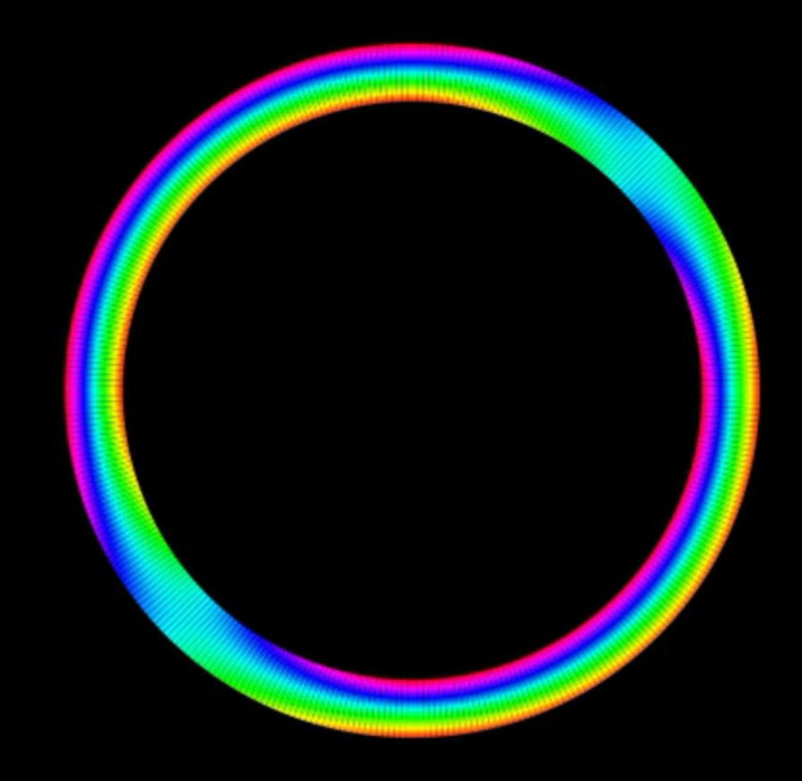
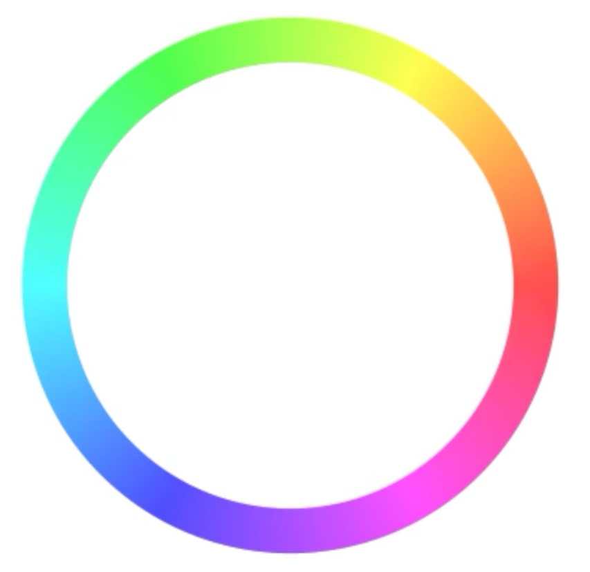
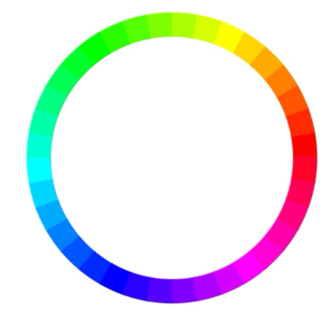

研究manim小结
总结
1228
研究贝多芬的代码1 - 4
学习了 rotate旋转、Flip翻折、字体大小设置、字体样式设置、公式上色（首先建立在对公式的注释上）、framebox方框、bracetext 横框、公式里的拷贝及变换
xxxxxxxxxx3881from manimlib.imports import *234# pycharm有自动调整代码格式的快捷键，默认为Alt + Ctrl + L56class TipesOfText2(Scene):7 def construct(self):8 typesOfText = TextMobject("""9 This is a regular text,10 $\\frac{x}{y}$,11 $\\displaystyle\\frac{x}{y}$,12 $x^2+y^2=a^2$，13 $$x^2+y^2=a^2$$14 """)15 trytext = TextMobject(16 '''17 $\\frac{x}{y}$,18 $\\displaystyle\\frac{x}{y}$,19 '''20 )21 #行内公式displaystyle22 self.play(Write(typesOfText))23 self.play(FadeOut(typesOfText))24 self.play(Write(trytext))25 self.wait(3)26#公式格式27class RotateObject(Scene):28 def construct(self):29 textM = TextMobject("Text")30 textC = TextMobject("Reference text")31 textM.shift(UP)32 textM.rotate(PI/4) # <- Radians33 # You can use .rotate(45*DEGREES) too34 self.play(Write(textM),Write(textC))35 self.wait(1)36 textM.rotate(PI/4)37 self.wait(1)38 textM.rotate(PI/4)39 self.wait(1)40 textM.rotate(PI/4)41 self.wait(1)42 textM.rotate(PI)43 self.wait(1)44#旋转45class FlipObject(Scene):46 def construct(self):47 textM = TextMobject("Text")48 textM.flip(UP)49 self.play(Write(textM))50 self.wait(2)51#翻转52class SizeTextOnLaTeX(Scene):53 def construct(self):54 textHuge = TextMobject("{\\Huge Huge Text 012.\\#!?} Text")55 texthuge = TextMobject("{\\huge huge Text 012.\\#!?} Text")56 textLARGE = TextMobject("{\\LARGE LARGE Text 012.\\#!?} Text")57 textLarge = TextMobject("{\\Large Large Text 012.\\#!?} Text")58 textlarge = TextMobject("{\\large large Text 012.\\#!?} Text")59 textNormal = TextMobject("{\\normalsize normal Text 012.\\#!?} Text")60 textsmall = TextMobject("{\\small small Text 012.\\#!?} Texto normal")61 textfootnotesize = TextMobject("{\\footnotesize footnotesize Text 012.\\#!?} Text")62 textscriptsize = TextMobject("{\\scriptsize scriptsize Text 012.\\#!?} Text")63 texttiny = TextMobject("{\\tiny tiny Texto 012.\\#!?} Text normal")64 textHuge.to_edge(UP)65 texthuge.next_to(textHuge,DOWN,buff=0.1)66 textLARGE.next_to(texthuge,DOWN,buff=0.1)67 textLarge.next_to(textLARGE,DOWN,buff=0.1)68 textlarge.next_to(textLarge,DOWN,buff=0.1)69 textNormal.next_to(textlarge,DOWN,buff=0.1)70 textsmall.next_to(textNormal,DOWN,buff=0.1)71 textfootnotesize.next_to(textsmall,DOWN,buff=0.1)72 textscriptsize.next_to(textfootnotesize,DOWN,buff=0.1)73 texttiny.next_to(textscriptsize,DOWN,buff=0.1)74 self.add(textHuge,texthuge,textLARGE,textLarge,textlarge,textNormal,textsmall,textfootnotesize,textscriptsize,texttiny)75 self.wait(3)76#字体大小77class TextFonts(Scene):78 def construct(self):79 textNormal = TextMobject("\\textrm{Roman serif text 012.\\#!?} Text")80 textItalic = TextMobject("\\textit{Italic text 012.\\#!?} Text")81 textTypewriter = TextMobject("\\texttt{Typewritter text 012.\\#!?} Text")82 textBold = TextMobject("\\textbf{Bold text 012.\\#!?} Text")83 textSL = TextMobject("\\textsl{Slanted text 012.\\#!?} Text")84 textSC = TextMobject("\\textsc{Small caps text 012.\\#!?} Text")85 textNormal.to_edge(UP)86 textItalic.next_to(textNormal,DOWN,buff=.5)87 textTypewriter.next_to(textItalic,DOWN,buff=.5)88 textBold.next_to(textTypewriter,DOWN,buff=.5)89 textSL.next_to(textBold,DOWN,buff=.5)90 textSC.next_to(textSL,DOWN,buff=.5)91 self.add(textNormal,textItalic,textTypewriter,textBold,textSL,textSC)92 self.wait(3)93#字体94class FormulaColor1(Scene):95 def construct(self):96 text1 = TexMobject("x","=","{a","\\over","b}")97 text1[0].set_color(RED)98 text1[1].set_color(BLUE)99 text1[2].set_color(GREEN)100 text1[3].set_color(ORANGE)101 text1[4].set_color("#DC28E2")102 text2 = TexMobject("x","=","\\frac{a}{b}")103 text2[0].set_color(RED)104 text2[1].set_color(BLUE)105 text2[2].set_color(GREEN)106 text2.next_to(text1,RIGHT,buff=0.5)107 self.play(Write(text1))108 self.play(Write(text2))109 self.wait(1)110#公式上色111def debugTeX(self, texm):112 for i, j in enumerate(texm):113 tex_id = Text(str(i), font="Euclid").scale(0.2).set_color(RED)114 tex_id.move_to(j)115 self.add(tex_id)116#公式注释117class FormulaColor3(Scene):118119 def construct(self):120 plane = NumberPlane()121 # plane.add(plane.get_axis_labels(x_label_tex="x", y_label_tex="y"))122 plane.add(plane.get_axis_labels())123 # ???plane.add(plane.get_axis_label(label_tex: "x", axis:"y" , edge: UP, direction: DL))124 #self.add(plane)125 text1 = TexMobject("\\sqrt{","\\int_{","a}^","{b}","\\left(","\\frac{x}{y}","\\right)","dx}")126 text1[0].set_color(RED)127 text1[1].set_color(BLUE)128 text1[2].set_color(GREEN)129 text1[3].set_color(YELLOW)130 text1[4].set_color(PINK)131 text1[5].set_color(ORANGE)132 text1[6].set_color(PURPLE)133 text1[7].set_color(MAROON)134 text1.to_corner(UL)135 text1.scale(2)136 text1.move_to([-3.5,2,0])137 self.add(text1)138 debugTeX(self, text1)139 text2 = TexMobject("\\sqrt{", "\\int_{", "a}^", "{b}", "\\left(", "\\frac{x}{y}", "\\right)", "dx.}")140 text2[0].set_color(RED)141 text2[1].set_color(BLUE)142 text2[2].set_color(GREEN)143 text2[3].set_color(YELLOW)144 text2[4].set_color(PINK)145 text2[5].set_color(ORANGE)146 text2[6].set_color(PURPLE)147 text2[7].set_color(MAROON)148 text2.scale(2)149 text2.move_to([3.5, 2, 0])150 self.add(text2)151 debugTeX(self, text2)152 text3 = TexMobject("\\sqrt{", "\\int_", "{a}^", "{b}", "{\\left(", "{x", "\\over", "y}", "\\right)}", "d", "x",153 ".}")154 text3[0].set_color(RED)155 text3[1].set_color(BLUE)156 text3[2].set_color(GREEN)157 text3[3].set_color(YELLOW)158 text3[4].set_color(PINK)159 text3[5].set_color(ORANGE)160 text3[6].set_color(PURPLE)161 text3[7].set_color(MAROON)162 text3[8].set_color(TEAL)163 text3[9].set_color(GOLD)164 text3.scale(2)165 text3.move_to([-3.5, -2, 0])166 self.add(text3)167 debugTeX(self, text3)168 text4 = TexMobject("\\sqrt{", "\\int_", "{a", "+", "c}^", "{b}", "{\\left(", "{x", "\\over", "y}", "\\right)}",169 "d", "x", ".}")170 text4[0].set_color(RED)171 text4[1].set_color(BLUE)172 text4[2].set_color(GREEN)173 text4[3].set_color(YELLOW)174 text4[4].set_color(PINK)175 text4[5].set_color(ORANGE)176 text4[6].set_color(PURPLE)177 text4[7].set_color(MAROON)178 text4[8].set_color(TEAL)179 text4[9].set_color(GOLD)180 text4[10].set_color(GRAY)181 text4[11].set_color(RED)182 text4.scale(2)183 text4.move_to([3.5, -2, 0])184185 #text = VGroup(text1,text2,text3,text4).arrange(DOWN, aligned_edge=LEFT, buff=0.3)186 self.play(Write(text4[0:6]))187 self.wait(2)188 self.add(text4)189 debugTeX(self, text4)190 self.wait(3)191#公式上色进阶192class ColorByCaracter(Scene):193 def construct(self):194 text = TexMobject("{d","\\over","d","x","}","\\int_","{a}^","{","x","}","f(","t",")d","t","=","f(","x",")")195 #text1 = TexMobject("\\frac{","\\mathrm","{d","}"," }","{","\\mathrm","{","d}"," x}", "\\int_{","a}","^{","x}"," f","(t)","\\mathrm{","d}","t" ,"=" ,"f","(","x",")")196 text1.set_color_by_tex("x",RED)197 self.play(Write(text))198 #self.play(Write(text1))199 self.wait(2)200'''##!!公式字上色，还需要学习latex。'''201class ForTwoVariables(Scene):202 def construct(self): #no usar siempre frac203 text = TexMobject("[0]","[1]","[2]","[3]","[4]","[5]","[6]","[7]")204 for i,color in [(2,RED),(4,PINK)]:205 text[i].set_color(color)206 self.play(Write(text))207 self.wait(3)208#两个变量上色209class ColoringText(Scene):210 def construct(self):211 text = TextMobject("Text or object")212 self.add(text)213 self.wait(0.5)214 for letter in text:215 self.play(LaggedStart(216 letter,217 lambda m: (m.set_color, YELLOW)218 ))219 self.wait(0.5)220'''##!!字符串上色，新旧版本，需要理解'''221class FrameBox1(Scene):222 def construct(self):223 text=TexMobject(224 "\\hat g(", "f", ")", "=", "\\int", "_{t_1}", "^{t_{2}}",225 "g(", "t", ")", "e", "^{-2\\pi i", "f", "t}", "dt"226 )227 frameBox = SurroundingRectangle(text[4], buff = 0.2*SMALL_BUFF,color=BLUE)228 seleccion = VGroup(text[7], text[8], text[9])229 frameBox2 = SurroundingRectangle(seleccion, buff=0.5 * SMALL_BUFF)230 frameBox2.set_stroke(GREEN, 9)231 cross = Cross(text[11])232 cross.set_stroke(RED, 6)233 eq = VGroup(text[2], text[3])234 cross2= Cross(eq)235 cross2.set_stroke(PINK, 3)236 self.play(Write(text))237 self.wait(.5)238 self.play(ShowCreation(frameBox))239 self.wait(.5)240 self.play(ShowCreation(frameBox2))241 self.wait(.5)242 self.play(ShowCreation(cross))243 self.wait(.5)244 self.play(ShowCreation(cross2))245 self.wait(2)246#框框及叉叉247class BraceText(Scene):248 def construct(self):249 text=TexMobject(250 "\\frac{d}{dx}f(x)g(x)=","f(x)\\frac{d}{dx}g(x)","+",251 "g(x)\\frac{d}{dx}f(x)"252 )253 self.play(Write(text))254 brace_top = Brace(text[1], UP, buff = SMALL_BUFF)255 brace_bottom = Brace(text[3], DOWN, buff = SMALL_BUFF)256 text_top = brace_top.get_text("$g'f$")257 text_bottom = brace_bottom.get_text("$f'g$")258 self.play(259 GrowFromCenter(brace_top),260 GrowFromCenter(brace_bottom),261 FadeIn(text_top),262 FadeIn(text_bottom)263 )264 self.wait()265#上框及下框266class TransformIssues(Scene):267 def construct(self):268 # 0 1 2269 text_1=TextMobject("A","B","C")270 # 0271 text_2=TextMobject("B")272273 text_2.next_to(text_1,UP,buff=1)274275 #Add the elements 0 and 2 of text_1 to screen and text_2276 self.play(277 *[278 FadeIn(text_1[i])279 for i in [0,2]280 ],281 FadeIn(text_2)282 )283284 self.wait()285286 self.play(287 ReplacementTransform(text_2[:],text_1[1])288 )289290 self.wait()291#物体变换，貌似并没有贝多芬发现的问题，不管加不加：292class CopyTextV1(Scene):293 def construct(self):294 formula = TexMobject(295 "\\frac{d}{dx}", #0296 "(", #1297 "u", #2298 "+", #3299 "v", #4300 ")", #5301 "=", #6302 "\\frac{d}{dx}", #7303 "u", #8304 "+", #9305 "\\frac{d}{dx}", #10306 "v" #11307 )308 formula.scale(2)309 for letter, color in [("u", RED), ("v", BLUE)]:310 formula.set_color_by_tex(letter, color)311 self.play(Write(formula[0:7]))312 #这里只能到第六个313 self.wait()314 self.play(315 ReplacementTransform(formula[2].copy(),formula[8]),316 ReplacementTransform(formula[4].copy(),formula[11]),317 ReplacementTransform(formula[3].copy(),formula[9])318 )319 self.wait()320 self.play(321 ReplacementTransform(formula[0].copy(),formula[7]),322 ReplacementTransform(formula[0].copy(),formula[10])323 )324 self.wait()325 self.add(formula)326 debugTeX(self, formula)327 self.wait(3)328#公式复制及上色329class CopyTwoFormulas2(Scene):330 def construct(self):331 formula1 = TexMobject(332 "\\neg","\\forall","x",":","P(x)"333 )334 formula2 = TexMobject(335 "\\exists","x",":","\\neg","P(x)"336 )337 for tam,pos,formula in [(2,2*UP,formula1),(2,2*DOWN,formula2)]:338 formula.scale(tam)339 formula.move_to(pos)340 self.play(Write(formula1))341 self.wait(3)342 changes = [343 # First time344 [(2,3,4),345 # | | |346 # v v v347 (1,2,4)],348 # Second time349 [(0,),350 # |351 # v352 (3,)],353 # Third time354 [(1,),355 # |356 # v357 (0,)]358 ]359 for pre_ind,post_ind in changes:360 self.play(*[361 ReplacementTransform(362 formula1[i].copy(),formula2[j]363 )364 for i,j in zip(pre_ind,post_ind)365 ],366 #zip将两个表打包成元组367 run_time=2368 )369 self.wait()370#公式变换，有个骚操作可以学一下371class ChangeColorAndSizeAnimation(Scene):372 def construct(self):373 text = TextMobject("T", "e", "x", "t")374 text.scale(2)375 text.shift(LEFT*2)376 self.play(Write(text))377 self.wait()378 self.play(379 text.shift, RIGHT*2,380 text.scale, 2,381 text[2].set_color, RED,382 text[2].next_to(text[1],RIGHT,buff=1),383 text[2].scale, 2,384 run_time=2,385 )386 self.wait(2)387'''想实现字符串中一个字边移动边变大边变色，差一点意思'''388
1231
研究贝多芬代码5-6a
学习了移动边框、设计箭头、实验了各种坐标系
在研究坐标系里面，发现坐标系的绘制出现一些问题，

这是因为np的问题，详见代码136行
贝多芬的解决方式是，用list来确定位置，自己来做字符串或tex进行填充
代码如下
xxxxxxxxxx4671from manimlib.imports import *234# pycharm有自动调整代码格式的快捷键，默认为Alt + Ctrl + L5# Alt + Ctrl + - 快速折叠6#$57class MoveBraces(Scene):8 def construct(self):9 text=TexMobject(10 "\\frac{d}{dx}f(x)g(x)=", #011 "f(x)\\frac{d}{dx}g(x)", #112 "+", #213 "g(x)\\frac{d}{dx}f(x)" #314 )15 self.play(Write(text))16 brace1 = Brace(text[1], UP, buff = SMALL_BUFF)17 brace2 = Brace(text[3], UP, buff = SMALL_BUFF)18 t1 = brace1.get_text("$g'f$")19 t2 = brace2.get_text("$f'g$")20 brace3 = Brace(text[1], DOWN, buff=SMALL_BUFF)21 brace4 = Brace(text[3], DOWN, buff=SMALL_BUFF)22 t3 = brace3.get_text("$g'f$")23 t4 = brace4.get_text("$f'g$")24 framebox1 = SurroundingRectangle(text[1], buff=.1)25 framebox2 = SurroundingRectangle(text[3], buff=.1)26 self.play(27 GrowFromCenter(brace1),28 FadeIn(t1),29 )30 self.wait()31 self.play(32 ReplacementTransform(brace1,brace2),33 ReplacementTransform(t1,t2)34 )35 self.wait()36 self.play(37 GrowFromCenter(brace3),38 FadeIn(t3),39 )40 self.play(41 ReplacementTransform(brace3.copy(), brace4),42 ReplacementTransform(t3.copy(), t4)43 )44 self.wait()4546 self.play(47 ShowCreation(framebox1),48 )49 self.wait()50 self.play(51 ReplacementTransform(framebox1, framebox2),52 )53 self.wait()54#移动上下框55class MoveBraces2(Scene):56 def construct(self):57 text=TexMobject(58 "\\frac{d}{dx}f(x)g(x)=", #059 "f(x)\\frac{d}{dx}g(x)", #160 "+", #261 "g(x)\\frac{d}{dx}f(x)" #362 )63 self.play(Write(text))6465 framebox1 = SurroundingRectangle(text[1], buff=.1)66 framebox2 = SurroundingRectangle(text[3], buff=.1)676869 self.play(70 ShowCreation(framebox1),71 )72 self.wait()73 self.play(74 ReplacementTransform(framebox1, framebox2),75 )76 self.wait()77 self.play(ShowCreation(framebox2.set_color(BLUE)))78 framebox1 = SurroundingRectangle(text[1], buff=.1)79 #framebox1在之前已经被移动了位置，需要复原。80 self.play(81 ReplacementTransform(framebox2, framebox1),82 path_arc=np.pi*383 # np.pi 逆时针旋转，84 )85#移动框86class Arrow2(Scene):87 def construct(self):88 step1 = TextMobject("Step 1")89 step2 = TextMobject("Step 2")90 step1.move_to(LEFT*2+DOWN*2)91 step2.move_to(4*RIGHT+2*UP)92 arrow1 = Arrow(step1.get_right(),step2.get_left(),buff=0.1)93 arrow1.set_color(RED)94 arrow2 = Line(step1.get_top(),step2.get_bottom(),buff=0.1)95 arrow2.set_color(BLUE)96 arrow3 = DashedLine(step1.get_right(), step2.get_right(), buff=0.1)97 arrow3.set_color(ORANGE)98 self.play(Write(step1),Write(step2),ShowCreation(arrow3))99 self.play(GrowArrow(arrow1))100 self.play(GrowArrow(arrow2))101 self.wait()102103 step3 = TextMobject("Step 3")104 step3.move_to(2*UP+LEFT*2)105 step4=step3.copy()106 step4.move_to(1*UP+3*LEFT)107 line = Line(step1.get_right(), step3.get_bottom(), buff=0.1)108 lineCopy = Arrow(step1.get_right(), step4.get_bottom(), buff=0.1)109110 self.play(Write(step3))111 self.play(GrowArrow(line))112 self.play(113 ReplacementTransform(step3, step4),114 ReplacementTransform(line, lineCopy)115 )116 self.wait()117#箭头类移动118119#$6120def Range(in_val,end_val,step=1):121 return list(np.arange(in_val,end_val+step,step))122class Plot1(GraphScene):123 G = np.arange(0, 8, 0.5)124 X = list(G)125 print(X)126 CONFIG = {127 "y_max" : 50,128 "y_min" : 0,129 "x_max" : 7,130 "x_min" : 0,131 "y_tick_frequency" : 5,132 "x_tick_frequency" : 0.5,133 "axes_color" : BLUE,134 "y_labeled_nums": range(0,60,10),135 "x_labeled_nums": X,136# TODO, this is broken...这里有问题，b=np.arange(0, 7.0+0.5, 0.5) array([0. , 0.5, 1. , 1.5, 2. , 2.5, 3. , 3.5, 4. , 4.5, 5. , 5.5, 6. ,6.5, 7. ])137# 1.5 2 2.5 都被当做是2138 "x_label_decimal":1,139 "y_label_direction": RIGHT,140 "x_label_direction": UP,141 "y_label_decimal":3142 }143 def construct(self):144 self.setup_axes(animate=True)145 graph = self.get_graph(lambda x : x**2,146 color = PINK,147 x_min = 0,148 x_max = 7149 )150 self.play(151 ShowCreation(graph),152 run_time = 3153 )154 self.wait()155##!!试一试坐标，发现有些问题。156class Plot1v2(GraphScene):157 CONFIG = {158 "y_max" : 50,159 "y_min" : 0,160 "x_max" : 7,161 "x_min" : 0,162 "y_tick_frequency" : 5,163 "x_tick_frequency" : 1,164 "axes_color" : BLUE,165 "graph_origin" : np.array((0,0,0))166 }167 def construct(self):168 self.setup_axes(animate=True)169 graph = self.get_graph(lambda x : x**2,170 color = GREEN,171 x_min = 2,172 x_max = 4173 )174 self.play(175 ShowCreation(graph),176 run_time = 2177 )178 self.wait()179#坐标系，设置里中心点180class Plot2(GraphScene):181 CONFIG = {182 "y_max": 70,183 "y_min": 0,184 "x_max": 7,185 "x_min": 0,186 "y_tick_frequency": 5,187 "axes_color": BLUE,188 "x_axis_label": "$t$",189 "y_axis_label": "$f(t)$",190 }191192 def construct(self):193 self.setup_axes()194 graph = self.get_graph(lambda x: x ** 2, color=GREEN)195 self.play(196 ShowCreation(graph),197 run_time=2198 )199 self.wait()200# Todo 自己写了个画坐标系的函数 本质上就是在空坐标轴上加number201 def setup_axes(self):202 # Add this line203 GraphScene.setup_axes(self)204 # Parametters of labels205 # For x206 init_label_x = 2207 end_label_x = 8208 step_x = 1209 # For y210 init_label_y = 20211 end_label_y = 60212 step_y = 5213 # Position of labels214 # For x215 self.x_axis.label_direction = DOWN # DOWN is default216 # For y217 self.y_axis.label_direction = LEFT218 # Add labels to graph219 # For x220 self.x_axis.add_numbers(*range(221 init_label_x,222 end_label_x + step_x,223 step_x224 ))225 # For y226 self.y_axis.add_numbers(*range(227 init_label_y,228 end_label_y + step_y,229 step_y230 ))231 # Add Animation232 self.play(233 ShowCreation(self.x_axis),234 ShowCreation(self.y_axis)235 )236#依旧是整数坐标系237class Plot5(GraphScene):238 CONFIG = {239 "y_max" : 50,240 "y_min" : 0,241 "x_max" : 7,242 "x_min" : 0,243 "y_tick_frequency" : 10,244 "x_tick_frequency" : 0.5,245 "axes_color" : BLUE,246 }247 def construct(self):248 self.setup_axes()249 graph = self.get_graph(lambda x : x**2, color = GREEN)250251 self.play(252 ShowCreation(graph),253 run_time = 2254 )255 self.wait()256257 def setup_axes(self):258 GraphScene.setup_axes(self)259 self.x_axis.label_direction = UP260 values_x = [261 (3.5,"3.5"), # (position 3.5, label "3.5")262 (4.5,"\\frac{9}{2}") # (position 4.5, label "9/2")263 ]264 self.x_axis_labels = VGroup() # Create a group named x_axis_labels265 # pos. tex.266 for x_val, x_tex in values_x:267 tex = TexMobject(x_tex) # Convert string to tex268 tex.scale(0.6)269 tex.next_to(self.coords_to_point(x_val, 0), DOWN) #Put tex on the position270 self.x_axis_labels.add(tex) #Add tex in graph271 self.play(272 Write(self.x_axis_labels),273 Write(self.x_axis),274 Write(self.y_axis)275 )276#通过tex添加小数和分数277class Plot6(GraphScene):278 CONFIG = {279 "y_max" : 50,280 "y_min" : 0,281 "x_max" : 7,282 "x_min" : 0,283 "y_tick_frequency" : 10,284 "x_tick_frequency" : 0.5,285 "axes_color" : BLUE,286 }287 def construct(self):288 self.setup_axes()289 graph = self.get_graph(lambda x : x**2, color = GREEN)290291 self.play(292 ShowCreation(graph),293 run_time = 2294 )295 self.wait()296297 def setup_axes(self):298 GraphScene.setup_axes(self)299 self.x_axis.label_direction = UP300 # List of values of positions301 values_decimal_x=[0,0.5,1,1.5,3.35,6.2]302 # Transform positions to tex labels303 list_x = [*["%s"%i for i in values_decimal_x]]304 #list_x 是字符串 加*是为了使列表里每个都是独立元素305 # List touples of (position,label)306 values_x = [307 (i,j)308 for i,j in zip(values_decimal_x,list_x)309 ]310 self.x_axis_labels = VGroup()311 for x_val, x_tex in values_x:312 tex = TexMobject(x_tex)313 tex.scale(0.7)314 tex.next_to(self.coords_to_point(x_val, 0), DOWN)315 line = Line(self.coords_to_point(x_val, -4),self.coords_to_point(x_val, 4))316 line.set_color(RED)317 self.x_axis_labels.add(tex)318 self.x_axis_labels.add(line)319 self.play(320 Write(self.x_axis_labels),321 Write(self.x_axis),322 Write(self.y_axis)323 )324#自制，通过line加坐标325class Plot7(GraphScene):326 CONFIG = {327 "y_max" : 50,328 "y_min" : 0,329 "x_max" : 7,330 "x_min" : 0,331 "y_tick_frequency" : 10,332 "x_tick_frequency" : 0.5,333 "axes_color" : BLUE,334 }335 def construct(self):336 self.setup_axes()337 graph = self.get_graph(lambda x : x**2, color = GREEN)338339 self.play(340 ShowCreation(graph),341 run_time = 2342 )343 self.wait()344345 def setup_axes(self):346 GraphScene.setup_axes(self)347 self.x_axis.label_direction = UP348 # Additional parametters349 init_val_x = 0350 step_x = 0.5351 end_val_x = 7352 # Position of labels353 values_decimal_x=Range(init_val_x,end_val_x,step_x)354 # List of labels355 list_x=[*["%.1f"%i for i in values_decimal_x]]356 # List touples of (posición,etiqueta)357 values_x = [358 (i,j)359 for i,j in zip(values_decimal_x,list_x)360 ]361 self.x_axis_labels = VGroup()362 for x_val, x_tex in values_x:363 tex = TexMobject(x_tex)364 tex.scale(0.7)365 tex.next_to(self.coords_to_point(x_val, 0), DOWN)366 self.x_axis_labels.add(tex)367 self.play(368 Write(self.x_axis_labels),369 Write(self.x_axis),370 Write(self.y_axis)371 )372#接近完美了373374class PlotSinCos(GraphScene):375 CONFIG = {376 "y_max" : 1.5,377 "y_min" : -1.5,378 "x_max" : 3*PI/2,379 "x_min" : -3*PI/2,380 "y_tick_frequency" : 0.5,381 "x_tick_frequency" : PI/2,382 "graph_origin" : ORIGIN,383 "y_axis_label": None, # Don't write y axis label384 "x_axis_label": None,385 }386 def construct(self):387 self.setup_axes()388 plotSin = self.get_graph(lambda x : np.sin(x),389 color = GREEN,390 x_min=-4,391 x_max=4,392 )393 plotCos = self.get_graph(lambda x : np.cos(x),394 color = PINK,395 x_min=-PI,396 x_max=PI,397 )398 plotSin.set_stroke(width=3) # width of line399 plotCos.set_stroke(width=2)400 # Animation401 for plot in (plotSin,plotCos):402 self.play(403 ShowCreation(plot),404 run_time = 2405 )406 self.wait()407408 def setup_axes(self):409 GraphScene.setup_axes(self)410 # width of edges411 self.x_axis.set_stroke(width=2)412 self.y_axis.set_stroke(width=2)413 # color of edges414 self.x_axis.set_color(RED)415 self.y_axis.set_color(YELLOW)416 # Add x,y labels417 func = TexMobject("\\sin\\theta")418 var = TexMobject("\\theta")419 func.set_color(BLUE)420 var.set_color(PURPLE)421 func.next_to(self.y_axis,UP)422 var.next_to(self.x_axis,RIGHT+UP)423 # Y labels424 self.y_axis.label_direction = LEFT*1.5425 self.y_axis.add_numbers(*[-1,1])426 #Parametters of x labels427 init_val_x = -3*PI/2428 step_x = PI/2429 end_val_x = 3*PI/2430 # List of the positions of x labels431 values_decimal_x=Range(init_val_x,end_val_x,step_x)432 # List of tex objects433 list_x=TexMobject("-\\frac{3\\pi}{2}", # -3pi/2434 "-\\pi", # -pi435 "-\\frac{\\pi}{2}", # -pi/2436 "\\,", # 0 (space)437 "\\frac{\\pi}{2}", # pi/2438 "\\pi",# pi439 "\\frac{3\\pi}{2}" # 3pi/2440 )441 #List touples (position,label)442 values_x = [(i,j)443 for i,j in zip(values_decimal_x,list_x)444 ]445 self.x_axis_labels = VGroup()446 for x_val, x_tex in values_x:447 x_tex.scale(0.7)448 if x_val == -PI or x_val == PI: #if x is equals -pi or pi449 x_tex.next_to(self.coords_to_point(x_val, 0), 2*DOWN) #Put 2*Down450 else: # In another case451 x_tex.next_to(self.coords_to_point(x_val, 0), DOWN)452 self.x_axis_labels.add(x_tex)453454 self.play(455 *[Write(objeto)456 for objeto in [457 self.y_axis,458 self.x_axis,459 self.x_axis_labels,460 func,var461 ]462 ],463 run_time=2464 )465#画sincos466#简单总结画坐标系，目前来看由于np的不知名原因，list里的浮点数会变凑整。贝多芬的方法是用list来确定位置，自己来做字符串或tex进行填充，467#我觉得可以理解。操作性也可以。
0101
研究贝多芬代码6b
主要学习了镜头的移动，三维物体，以及在三维坐标下布置位置。
xxxxxxxxxx2731from manimlib.imports import *23#$6b PLOT3D4# pycharm有自动调整代码格式的快捷键，默认为Alt + Ctrl + L5def get_axis(self, min_val, max_val, axis_config):6 new_config = merge_config([7 axis_config,8 {"x_min": min_val, "x_max": max_val},9 self.number_line_config,10 ])11 return NumberLine(**new_config)121314class CameraPosition2(ThreeDScene):15 def construct(self):16 axes = ThreeDAxes()17 circle = Circle()18 self.set_camera_orientation(phi=30 * DEGREES)19 self.play(ShowCreation(circle), ShowCreation(axes))20 self.wait()212223# 移动镜头24class MoveCamera1(ThreeDScene):25 def construct(self):26 axes = ThreeDAxes()27 circle = Circle()28 self.play(ShowCreation(circle), ShowCreation(axes))29 self.move_camera(phi=30 * DEGREES, theta=-45 * DEGREES, distance=4, gamma=30 * DEGREES, run_time=5)30 self.wait()313233# 移动镜头，测试gamma34class MoveCamera2(ThreeDScene):35 def construct(self):36 axes = ThreeDAxes()37 circle = Circle()38 self.play(ShowCreation(circle), ShowCreation(axes))39 self.move_camera(phi=30 * DEGREES, theta=-45 * DEGREES, distance=8, gamma=60 * DEGREES, run_time=5)40 self.wait()414243# 移动镜头测试距离44class MoveCamera3(ThreeDScene):45 def construct(self):46 axes = ThreeDAxes()47 circle = Circle()48 self.set_camera_orientation(phi=80 * DEGREES)49 self.play(ShowCreation(circle), ShowCreation(axes))50 self.begin_ambient_camera_rotation(rate=0.3) # Start move camera51 self.wait(5)52 self.stop_ambient_camera_rotation() # Stop move camera53 self.move_camera(phi=80 * DEGREES, theta=PI / 2) # Return the position of the camera54 self.wait()55 self.move_camera(phi=-80 * DEGREES, theta=-PI / 2, run_time=2)56 # - 代表逆时针57 self.wait()585960# 测试慢慢移动镜头，且判断方向61class ParametricCurve1(ThreeDScene):62 def construct(self):63 curve1 = ParametricFunction(64 lambda u: np.array([65 1.2 * np.cos(u),66 1.2 * np.sin(u),67 u / 268 ]), color=RED, t_min=-TAU, t_max=TAU,69 )70 curve2 = ParametricFunction(71 lambda u: np.array([72 1.2 * np.cos(u),73 1.2 * np.sin(u),74 u/375 ]), color=PINK, t_min=-TAU/2, t_max=TAU/2,76 )77 axes = ThreeDAxes()7879 self.add(axes)8081 self.set_camera_orientation(phi=80 * DEGREES, theta=-60 * DEGREES)82 self.begin_ambient_camera_rotation(rate=0.1)83 self.play(ShowCreation(curve1))84 self.wait()85 self.play(Transform(curve1, curve2), rate_func=there_and_back, run_time=3)86 self.wait()8788class ParametricCurve2(ThreeDScene):89 def construct(self):90 curve1=ParametricFunction(91 lambda u : np.array([92 1.2*np.cos(u),93 1.2*np.sin(u),94 u/295 ]),color=RED,t_min=-TAU,t_max=TAU,96 )97 curve2=ParametricFunction(98 lambda u : np.array([99 1.2*np.cos(u),100 1.2*np.sin(u),101 u102 ]),color=RED,t_min=-TAU,t_max=TAU,103 )104105 curve1.set_shade_in_3d(True)106 curve2.set_shade_in_3d(True)107108 axes = ThreeDAxes()109110 self.add(axes)111112 self.set_camera_orientation(phi=80 * DEGREES,theta=-60*DEGREES)113 self.begin_ambient_camera_rotation(rate=0.1)114 self.play(ShowCreation(curve1))115 self.wait()116 self.play(Transform(curve1,curve2),rate_func=there_and_back,run_time=3)117 #there_and_back 就是恢复原来状态，，待进一步研究118 self.wait()119#todo 测试参数方程线，但都出现问题 missing 1 required positional argument: 'kwargs' 等等貌似是普遍问题，更换sense后解决120121122123class SurfacesAnimation(ThreeDScene):124 def construct(self):125 axes = ThreeDAxes()126 cylinder = ParametricSurface(127 lambda u, v: np.array([128 np.cos(TAU * v),129 np.sin(TAU * v),130 2 * (1 - u)131 ]),132 resolution=(6, 32)).fade(0.5) #Resolution of the surfaces133134 paraboloid = ParametricSurface(135 lambda u, v: np.array([136 np.cos(v)*u,137 np.sin(v)*u,138 u**2139 ]),v_max=TAU,140 checkerboard_colors=[PURPLE_D, PURPLE_E],141 resolution=(10, 32)).scale(2)142143 para_hyp = ParametricSurface(144 lambda u, v: np.array([145 u,146 v,147 u**2-v**2148 ]),v_min=-2,v_max=2,u_min=-2,u_max=2,checkerboard_colors=[BLUE_D, BLUE_E],149 resolution=(15, 32)).scale(1)150151 cone = ParametricSurface(152 lambda u, v: np.array([153 u*np.cos(v),154 u*np.sin(v),155 u156 ]),v_min=0,v_max=TAU,u_min=-2,u_max=2,checkerboard_colors=[GREEN_D, GREEN_E],157 resolution=(15, 32)).scale(1)158159 hip_one_side = ParametricSurface(160 lambda u, v: np.array([161 np.cosh(u)*np.cos(v),162 np.cosh(u)*np.sin(v),163 np.sinh(u)164 ]),v_min=0,v_max=TAU,u_min=-2,u_max=2,checkerboard_colors=[YELLOW_D, YELLOW_E],165 resolution=(15, 32))166167 ellipsoid=ParametricSurface(168 lambda u, v: np.array([169 1*np.cos(u)*np.cos(v),170 2*np.cos(u)*np.sin(v),171 0.5*np.sin(u)172 ]),v_min=0,v_max=TAU,u_min=-PI/2,u_max=PI/2,checkerboard_colors=[TEAL_D, TEAL_E],173 resolution=(15, 32)).scale(2)174175 sphere = ParametricSurface(176 lambda u, v: np.array([177 1.5*np.cos(u)*np.cos(v),178 1.5*np.cos(u)*np.sin(v),179 1.5*np.sin(u)180 ]),v_min=0,v_max=TAU,u_min=-PI/2,u_max=PI/2,checkerboard_colors=[RED_D, RED_E],181 resolution=(15, 32)).scale(2)182183184 self.set_camera_orientation(phi=75 * DEGREES)185 self.begin_ambient_camera_rotation(rate=0.2)186187188 self.add(axes)189 self.play(Write(sphere))190 self.wait()191 self.play(ReplacementTransform(sphere,ellipsoid))192 self.wait()193 self.play(ReplacementTransform(ellipsoid,cone))194 self.wait()195 self.play(ReplacementTransform(cone,hip_one_side))196 self.wait()197 self.play(ReplacementTransform(hip_one_side,para_hyp))198 self.wait()199 self.play(ReplacementTransform(para_hyp,paraboloid))200 self.wait()201 self.play(ReplacementTransform(paraboloid,cylinder))202 self.wait()203 self.play(FadeOut(cylinder))204#各种三维物体205class Text3D3(ThreeDScene):206 def construct(self):207 axes = ThreeDAxes()208 self.set_camera_orientation(phi=75 * DEGREES,theta=-45*DEGREES)209210211 self.add(axes)212 self.begin_ambient_camera_rotation()213214 text3d0 = TextMobject("This is a 3D text").scale(1)215 self.add(axes, text3d0)216 text3d1 = TextMobject("PI / 2, axis=RIGHT").scale(2).set_shade_in_3d(True)217 text3d1.rotate(PI / 2, axis=RIGHT)218 text3d1.set_color(RED)219 text3d2 = TextMobject("PI / 2, axis=LEFT").scale(2).set_shade_in_3d(False)220 text3d2.rotate(PI / 2, axis=LEFT)221 text3d2.set_color(GREEN)222 text3d3 = TextMobject("-PI / 2, axis=RIGHT").scale(2).set_shade_in_3d(True)223 text3d3.rotate(-PI / 2, axis=RIGHT)224 text3d3.set_color(BLUE)225 text3d4 = TextMobject("PI, axis=UP").scale(2).set_shade_in_3d(True)226 text3d4.rotate(PI, axis=array([0.0, 1.0, 0.0]))227 text3d4.set_color(PINK)228229 self.wait()230 self.play(ShowCreation(text3d1))231 self.wait()232 self.play(Uncreate(text3d1))233 self.wait()234 self.play(ShowCreation(text3d2))235 self.wait()236 self.play(Uncreate(text3d2))237 self.wait()238 self.play(ShowCreation(text3d3))239 self.wait()240 self.play(Uncreate(text3d3))241 self.wait()242 self.play(ShowCreation(text3d4))243 self.wait()244#实验文字245246class Text3D32(ThreeDScene):247 def construct(self):248 axes = ThreeDAxes()249 self.set_camera_orientation(phi=75 * DEGREES,theta=-45*DEGREES)250 text3d=TextMobject("This is a 3D text")251252 self.add_fixed_in_frame_mobjects(text3d) #<----- Add this253 text3d.to_corner(UL)254255 self.add(axes)256 self.begin_ambient_camera_rotation()257 self.play(Write(text3d))258#todo 添加正常字失败 'tuple' object has no attribute 'sort'259260261class Text3D4(ThreeDScene):262 def construct(self):263 axes = ThreeDAxes()264 self.set_camera_orientation(phi=75 * DEGREES,theta=-45*DEGREES)265 self.add(axes)266 text3d4 = TextMobject("PI, axis=UP").scale(2).set_shade_in_3d(True)267 text3d4.rotate(PI/2+PI/18, axis=[0, 1.0, 1.0])268 text3d4.set_color(PINK)269270271 self.play(ShowCreation(text3d4))272 self.wait(2)273#todo 想探究下axis 感觉还是学会循环和update再说
0103
研究贝多芬7.8
测试了image,svg,audio的插入，以及值追踪
xxxxxxxxxx3611from manimlib.imports import *234# pycharm有自动调整代码格式的快捷键，默认为Alt + Ctrl + L56class AudioTest(Scene):7 def construct(self):8 group_dots = VGroup(*[Dot() for _ in range(3)])9 group_dots.arrange_submobjects(RIGHT)10 for dot in group_dots:11 self.add_sound("click", gain=-10)12 self.add(dot)13 self.wait()14 self.wait()15# todo 出现一些问题16class SVGTest(Scene):17 def construct(self):18 svg = SVGMobject("finger")19 # svg = SVGMobject("camera")20 self.play(DrawBorderThenFill(svg, rate_func=linear))21 self.wait()22# 书写svg23class ImageTest(Scene):24 def construct(self):25 image = ImageMobject("note")26 self.play(FadeIn(image))27 self.wait()28#贴图29class CheckSVG(Scene):30 CONFIG={31 "camera_config":{"background_color": WHITE},32 "svg_type":"svg",33 "file":"",34 "svg_scale":0.9,35 "angle":0,36 "flip_svg":False,37 "fill_opacity": 1,38 "remove": [],39 "stroke_color": BLACK,40 "fill_color": BLACK,41 "stroke_width": 3,42 "numbers_scale":0.5,43 "show_numbers": False,44 "animation": False,45 "direction_numbers": UP,46 "color_numbers": RED,47 "space_between_numbers":0,48 "show_elements":[],49 "color_element":BLUE,50 "set_size":"width",51 "remove_stroke":[],52 "show_stroke":[],53 "stroke_":154 }55 def construct(self):56 if self.set_size=="width":57 width_size=FRAME_WIDTH58 height_size=None59 else:60 width_size=None61 height_size=FRAME_HEIGHT6263 if self.svg_type=="svg":64 self.imagen=SVGMobject(65 "%s"%self.file,66 #fill_opacity = 1,67 stroke_width = self.stroke_width,68 stroke_color = self.stroke_color,69 width=width_size,70 height=height_size71 ).rotate(self.angle).set_fill(self.fill_color,self.fill_opacity).scale(self.svg_scale)72 else:73 self.imagen=self.import_text().set_fill(self.fill_color,self.fill_opacity).rotate(self.angle).set_stroke(self.stroke_color,self.stroke_width)74 if self.set_size=="width":75 self.imagen.set_width(FRAME_WIDTH)76 else:77 self.imagen.set_height(FRAME_HEIGHT)78 self.imagen.scale(self.svg_scale)79 self.personalize_image()80 if self.flip_svg==True:81 self.imagen.flip()82 if self.show_numbers==True:83 self.print_formula(self.imagen,84 self.numbers_scale,85 self.direction_numbers,86 self.remove,87 self.space_between_numbers,88 self.color_numbers)8990 self.return_elements(self.imagen,self.show_elements)91 for st in self.remove_stroke:92 self.imagen[st].set_stroke(None,0)93 for st in self.show_stroke:94 self.imagen[st].set_stroke(None,self.stroke_)95 if self.animation==True:96 self.play(DrawBorderThenFill(self.imagen))97 else:98 self.add(self.imagen)99 self.wait()100 def import_text(self):101 return TexMobject("")102103 def personalize_image(self):104 pass105106 def print_formula(self,text,inverse_scale,direction,exception,buff,color):107 text.set_color(RED)108 self.add(text)109 c = 0110 for j in range(len(text)):111 permission_print=True112 for w in exception:113 if j==w:114 permission_print=False115 if permission_print:116 self.add(text[j].set_color(self.stroke_color))117 c = c + 1118119 c=0120 for j in range(len(text)):121 permission_print=True122 element = TexMobject("%d" %c,color=color)123 element.scale(inverse_scale)124 element.next_to(text[j],direction,buff=buff)125 for w in exception:126 if j==w:127 permission_print=False128 if permission_print:129 self.add(element)130 c = c + 1131132 def return_elements(self,formula,adds):133 for i in adds:134 self.add_foreground_mobjects(formula[i].set_color(self.color_element),135 TexMobject("%d"%i,color=self.color_element,background_stroke_width=0).scale(self.numbers_scale).next_to(formula[i],self.direction_numbers,buff=self.space_between_numbers))136# 貌似是一堆函数，没搞起来137138139class FunctionTracker(Scene):140 def construct(self):141 # f(x) = x**2142 fx = lambda x: x.get_value()**2143 # ValueTrackers definition144 x_value = ValueTracker(0)145 fx_value = ValueTracker(fx(x_value))146 # DecimalNumber definition147 x_tex = DecimalNumber(x_value.get_value()).add_updater(lambda v: v.set_value(x_value.get_value()))148 fx_tex = DecimalNumber(fx_value.get_value()).add_updater(lambda v: v.set_value(fx(x_value)))149 # TeX labels definition150 x_label = TexMobject("x = ")151 fx_label = TexMobject("x^2 = ")152 # Grouping of labels and numbers153 group = VGroup(x_tex,fx_tex,x_label,fx_label).scale(2.6)154 VGroup(x_tex, fx_tex).arrange_submobjects(DOWN,buff=3)155 # Align labels and numbers156 x_label.next_to(x_tex,LEFT, buff=0.7,aligned_edge=x_label.get_bottom())157 fx_label.next_to(fx_tex,LEFT, buff=0.7,aligned_edge=fx_label.get_bottom())158159 self.add(group.move_to(ORIGIN))160 self.wait(3)161 self.play(162 x_value.set_value,30,163 rate_func=linear,164 run_time=10165 )166 self.wait()167 self.play(168 x_value.set_value,0,169 rate_func=linear,170 run_time=10171 )172 self.wait(3)173174175class FunctionTrackerWithNumberLine(Scene):176 def construct(self):177 # f(x) = x**2178 fx = lambda x: x.get_value()**2179 # ValueTrackers definition180 x_value = ValueTracker(0)181 fx_value = ValueTracker(fx(x_value))182 # DecimalNumber definition183 x_tex = DecimalNumber(x_value.get_value()).add_updater(lambda v: v.set_value(x_value.get_value()))184 fx_tex = DecimalNumber(fx_value.get_value()).add_updater(lambda v: v.set_value(fx(x_value)))185 # TeX labels definition186 x_label = TexMobject("x = ")187 fx_label = TexMobject("x^2 = ")188 # Grouping of labels and numbers189 group = VGroup(x_tex,fx_tex,x_label,fx_label).scale(2)190 # Set the labels position191 x_label.next_to(x_tex,LEFT, buff=0.7,aligned_edge=x_label.get_bottom())192 fx_label.next_to(fx_tex,LEFT, buff=0.7,aligned_edge=fx_label.get_bottom())193 # Grouping numbers and labels194 x_group = VGroup(x_label,x_tex)195 fx_group = VGroup(fx_label,fx_tex)196 # Align labels and numbers197 VGroup(x_group, fx_group).arrange_submobjects(RIGHT,buff=2,aligned_edge=DOWN).to_edge(UP)198 # Get NumberLine,Arrow and label from x199 x_number_line_group = self.get_number_line_group(200 "x",30,0.2,step_label=10,v_tracker=x_value,tick_frequency=2201 )202 x_number_line_group.to_edge(LEFT,buff=1)203 # Get NumberLine,Arrow and label from f(x)204 fx_number_line_group = self.get_number_line_group(205 "x^2",900,0.012,step_label=100,v_tracker=fx_tex,206 tick_frequency=50207 )208 fx_number_line_group.next_to(x_number_line_group,DOWN,buff=1).to_edge(LEFT,buff=1)209210 self.add(211 x_number_line_group,212 fx_number_line_group,213 group214 )215 self.wait()216 self.play(217 x_value.set_value,30,218 rate_func=linear,219 run_time=10220 )221 self.wait()222 self.play(223 x_value.set_value,0,224 rate_func=linear,225 run_time=10226 )227 self.wait(3)228229230 def get_numer_labels_to_numberline(self,number_line,x_max=None,x_min=0,buff=0.2,step_label=1,**tex_kwargs):231 # This method return the labels of the NumberLine232 labels = VGroup()233 x_max = number_line.x_max234 for x in range(x_min,x_max+1,step_label):235 x_label = TexMobject(f"{x}",**tex_kwargs)236 # todo 这里不是很理解，首先这个fx为什么显示是x，然后后面进来的参数是什么237 #已解决238 #Format strings contain “replacement fields” surrounded by curly braces {}. Anything that is not contained in braces is considered literal text, which is copied unchanged to the output. If you need to include a brace character in the literal text, it can be escaped by doubling: {{ and }}.239 # See manimlib/mobject/number_line.py CONFIG dictionary240 x_label.next_to(number_line.number_to_point(x),DOWN,buff=buff)241 labels.add(x_label)242 return labels243244 def get_number_line_group(self,label,x_max,unit_size,v_tracker,step_label=1,**number_line_config):245 # Set the Label (x,or x**2)246 number_label = TexMobject(label)247 # Set the arrow248 arrow = Arrow(UP,DOWN,buff=0).set_height(0.5)249 # Set the number_line250 number_line = NumberLine(251 x_min=0,252 x_max=x_max,253 unit_size=unit_size,254 numbers_with_elongated_ticks=[],255 **number_line_config256 )257 # Get the labels from number_line258 labels = self.get_numer_labels_to_numberline(number_line,step_label=step_label,height=0.2)259 # Set the arrow position260 arrow.next_to(number_line.number_to_point(0),UP,buff=0)261 # Grouping arrow and number_label262 label = VGroup(arrow,number_label)263 # Set the position of number_label264 number_label.next_to(arrow,UP,buff=0.1)265 # Grouping all elements266 numer_group = VGroup(label,number_line,labels)267 # Set the updater to the arrow and number_label268 label.add_updater(lambda mob: mob.next_to(number_line.number_to_point(v_tracker.get_value()),UP,buff=0))269270 return numer_group271272#HSL color, see https://pypi.org/project/colour/273def HSL(hue,saturation=1,lightness=0.5):274 # 色度，饱和度，亮度275 return Color(hsl=(hue,saturation,lightness))276277278# This function is come and go, but linear279def double_linear(t):280 if t < 0.5:281 return linear(t*2)282 else:283 return linear(1-(t-0.5)*2)284#来去函数变得线性285class ValueTrackerWithColor(Scene):286 def construct(self):287 gradient_rectangle = Rectangle(288 width=FRAME_WIDTH-1,289 height=1,290 fill_opacity=1,291 # Gradient direction292 sheen_direction=RIGHT,293 stroke_width=0294 )295 square = Square(fill_opacity=1)296 square.to_edge(UP,buff=1)297 gradient_rectangle.to_edge(DOWN,buff=1)298299 gradient_rectangle.set_color(color=self.get_hsl_set_colors())300301 color_tracker = ValueTracker(0)302303 color_label = Integer(color_tracker.get_value(),unit="^\\circ")304 #整数305 color_label.add_updater(lambda v: v.set_value(color_tracker.get_value()).next_to(square,UP))306307 square.add_updater(lambda s: s.set_color(HSL(color_tracker.get_value()/360)))308309 line_color = Line(310 gradient_rectangle.get_corner(UL),311 gradient_rectangle.get_corner(UR)312 )313 arrow = Arrow(LEFT,RIGHT)314 arrow.add_updater(lambda a: a.put_start_and_end_on(square.get_bottom()+DOWN*0.3,line_color.point_from_proportion(color_tracker.get_value()/360)))315 # put_start_and_end_on 把直线的首尾放在 start, end 上 point_from_proportion(alpha)在整条路径上占比为alpha处的点316 self.add(gradient_rectangle,square,color_label,arrow)317 self.wait(3)318 self.play(319 color_tracker.set_value,360,320 rate_func=double_linear,321 run_time=20,322 )323 self.wait(3)324325 def get_hsl_set_colors(self,saturation=1,lightness=0.5):326 return [*[HSL(i/360,saturation,lightness) for i in range(360)]]327328329class MmodNTracker(Scene):330 CONFIG = {331 "number_of_lines": 400,332 "gradient_colors":[RED,YELLOW,GREEN,BLUE,PINK],333 "end_value":100,334 "total_time":360,335 }336 def construct(self):337 circle = Circle().set_height(FRAME_HEIGHT*0.9)338 mod_tracker = ValueTracker(0)339 lines = self.get_m_mod_n_objects(circle,mod_tracker.get_value())340 lines.add_updater(341 lambda mob: mob.become(342 self.get_m_mod_n_objects(circle,mod_tracker.get_value())343 )344 )345 self.add(circle,lines)346 self.wait(3)347 self.play(348 mod_tracker.set_value,self.end_value,349 rate_func=linear,350 run_time=self.total_time351 )352 self.wait(3)353354 def get_m_mod_n_objects(self,circle,x,y=None):355 if y==None:356 y = self.number_of_lines357 lines = VGroup()358 for i in range(y):359360 lines.set_color_by_gradient(*self.gradient_colors)361 return lines0104
主要是研究贝多芬的color和m_mod_n
xxxxxxxxxx1261from manimlib.imports import *23def HSL(hue,saturation=1,lightness=0.5):4 # 色度，饱和度，亮度5 return Color(hsl=(hue,saturation,lightness))67class ValueTrackerWithColor(Scene):8 def construct(self):9 gradient_rectangle1 = Rectangle(10 width=FRAME_WIDTH-1,11 height=1,12 fill_opacity=1,13 # Gradient direction14 sheen_direction=RIGHT,15 stroke_width=016 )1718 gradient_rectangle1.to_edge(UP,buff=1)19 gradient_rectangle1.set_color(color=self.get_hsl_set_colors())20 gradient_rectangle2 = gradient_rectangle1.copy()21 gradient_rectangle2.to_edge(DOWN, buff=1)22 gradient_rectangle2.set_color(color=self.get_hsl_set_colors2())23 gradient_rectangle3 = gradient_rectangle2.copy()24 gradient_rectangle3.move_to(ORIGIN)25 gradient_rectangle3.set_color(color=self.get_hsl_set_colors3())26 self.add(gradient_rectangle1,gradient_rectangle2,gradient_rectangle3)27 self.wait(3)2829 def get_hsl_set_colors(self, saturation=1, lightness=0.5):30 return [*[HSL(i / 3, saturation, lightness) for i in range(3)]]31 def get_hsl_set_colors3(self, saturation=1, lightness=0.5):32 return [*[HSL(i / 720, saturation, lightness) for i in range(720)]]33 def get_hsl_set_colors2(self, saturation=1, lightness=0.5):34 return [*[HSL(i / 1080, saturation, lightness) for i in range(1080)]]353637def double_linear(t):38 if t < 0.5:39 return linear(t*2)40 else:41 return linear(1-(t-0.5)*2)42#来去函数变得线性43class ValueTrackerWithColor2(Scene):44 def construct(self):45 gradient_rectangle = Rectangle(46 width=FRAME_WIDTH-1,47 height=1,48 fill_opacity=1,49 # Gradient direction50 sheen_direction=RIGHT,51 stroke_width=052 )53 square = Square(fill_opacity=1)54 square.to_edge(UP,buff=1)55 gradient_rectangle.to_edge(DOWN,buff=1)5657 gradient_rectangle.set_color(color=self.get_hsl_set_colors())5859 color_tracker = ValueTracker(0)6061 color_label = Integer(color_tracker.get_value(),unit="^\\circ")62 #整数63 color_label.add_updater(lambda v: v.set_value(color_tracker.get_value()).next_to(square,UP))6465 square.add_updater(lambda s: s.set_color(HSL(color_tracker.get_value()/360)))6667 line_color = Line(68 gradient_rectangle.get_corner(UL),69 gradient_rectangle.get_corner(UR)70 )71 line_color.move_to(ORIGIN)72 #一个看不见的线73 #arrow = Arrow(LEFT,RIGHT)74 arrow = Arrow(UP,DOWN+LEFT)75 #这个arrow鸟用没有76 arrow.add_updater(lambda a: a.put_start_and_end_on(square.get_bottom()+DOWN*0.3,line_color.point_from_proportion(color_tracker.get_value()/360)))77 # put_start_and_end_on 把直线的首尾放在 start, end 上 point_from_proportion(alpha)在整条路径上占比为alpha处的点78 self.add(gradient_rectangle,square,color_label,arrow)79 self.wait(3)80 self.play(81 color_tracker.set_value,360,82 rate_func=double_linear,83 run_time=10,84 )85 self.wait(3)8687 def get_hsl_set_colors(self,saturation=1,lightness=0.5):88 return [*[HSL(i/360,saturation,lightness) for i in range(360)]]89# 区分颜色细度90class testMmodNTracker(Scene):91 CONFIG = {92 "number_of_lines": 30,93 "gradient_colors":[RED,GREEN,BLUE],94 "end_value":100,95 "total_time":100,96 }97 def construct(self):98 circle = Circle().set_height(FRAME_HEIGHT*0.9)99 mod_tracker = ValueTracker(0)100 lines = self.get_m_mod_n_objects(circle,mod_tracker.get_value())101 lines.add_updater(102 lambda mob: mob.become(103 self.get_m_mod_n_objects(circle,mod_tracker.get_value())104 )105 )106 self.add(circle,lines)107 self.wait(3)108 self.play(109 mod_tracker.set_value,self.end_value,110 rate_func=linear,111 run_time=self.total_time112 )113 self.wait(3)114115 def get_m_mod_n_objects(self,circle,x,y=None):116 if y==None:117 y = self.number_of_lines118 lines = VGroup()119 for i in range(y):120 start_point = circle.point_from_proportion((i%y)/y)121 end_point = circle.point_from_proportion(((i*x)%y)/y)122 line = Line(start_point,end_point).set_stroke(width=1)123 lines.add(line)124 lines.set_color_by_gradient(*self.gradient_colors)125 return lines126# todo 需要细品
0201
研究widcardw的updater1-3
valuetracker 以及updater
xxxxxxxxxx2801from manimlib.imports import *2from manim_sandbox.utils.imports import *345# pycharm有自动调整代码格式的快捷键，默认为Alt + Ctrl + L67class Rotate(Scene):89 def construct(self):10 # object11 axes = Axes().set_opacity(0.5)12 sq1 = Square(side_length=1, color=BLUE).shift(UP * 2.5)13 sq2 = Square(side_length=1, color=PINK).shift(UP * 2.5)14 # position1516 # show17 self.add(axes, sq1, sq2)18 self.wait()19 self.play(20 Rotating(sq1, radians=TAU / 3, about_point=ORIGIN),21 sq2.rotate, {"about_point": ORIGIN, "angle": TAU / 3},22 run_time=423 )24 self.wait()252627class RotatingExample(Scene):28 def construct(self):29 square = Square().scale(2)30 self.add(square)3132 self.play(33 Rotating(34 square,35 radians=PI / 4,36 run_time=237 )38 )39 self.wait(0.3)40 self.play(41 Rotating(42 square,43 radians=PI,44 run_time=2,45 axis=RIGHT46 )47 )48 self.wait(0.3)4950class ValueTrackerScene2(DarkScene):51 def construct(self):52 t = ValueTracker(0)53 cir = Circle(radius=2).shift(LEFT * 5)54 dot_o = Dot(LEFT * 5).set_color(RED)55 dot_a = Dot(LEFT * 3).set_color(YELLOW)56 l_oa = Line(LEFT * 5, LEFT * 3)57 dot_p = Dot().add_updater(lambda a: a.move_to(58 np.array([-5 + 2 * np.cos(t.get_value()), 2 * np.sin(t.get_value()), 0])))59 l_op = Line().add_updater(lambda a: a.put_start_and_end_on(60 dot_o.get_center(), dot_p.get_center()))61 arc = Arc(angle=0).add_updater(lambda a: a.become(62 Arc(start_angle=0, angle=t.get_value() % TAU, color=ORANGE).shift(LEFT * 5)))63 self.add(cir, dot_o, dot_a, dot_p, l_oa, l_op, arc)64 self.play(t.set_value, 2 * TAU, run_time=8, rate_func=linear)65class ValueTrackerScene3(DarkScene):66 def construct(self):67 t = ValueTracker(0)68 cir = Circle(radius=2).shift(LEFT * 5)69 dot_p = Dot().add_updater(lambda a: a.move_to(70 np.array([-5 + 2 * np.cos(t.get_value()), 2 * np.sin(t.get_value()), 0])))71 dot_q = Dot().add_updater(lambda a: a.move_to(72 np.array([-2, 2 * np.sin(t.get_value()), 0])))73 l_pq = DashedLine().add_updater(lambda a: a.put_start_and_end_on(74 dot_p.get_center(), dot_q.get_center()))75 dot_m = Dot().add_updater(lambda a: a.move_to(76 np.array([-2, 2 * np.cos(t.get_value()), 0])))77 l_pm = DashedLine().add_updater(lambda a: a.put_start_and_end_on(78 dot_p.get_center(), dot_m.get_center()))79 path = TracedPath(dot_q.get_center, stroke_width=6,80 stroke_color=YELLOW)81 path.add_updater(lambda a: a.shift(RIGHT * 0.04))82 path2 = TracedPath(dot_m.get_center, stroke_width=6,83 stroke_color=BLUE)84 path2.add_updater(lambda a: a.shift(RIGHT * 0.04))85 self.add(cir, dot_p, dot_q,dot_m, l_pq, l_pm,path,path2)86 self.play(t.set_value, 2 * TAU, run_time=8, rate_func=linear)8788class DtFourierScene(DarkScene):89 def construct(self):90 axes = Axes()91 vec1 = Vector(RIGHT, color=YELLOW)92 cir1 = Circle(radius=1, color=BLUE)93 gup1 = VGroup(vec1, cir1)9495 vec2 = Vector(RIGHT, color=YELLOW)96 cir2 = Circle(radius=1, color=BLUE)97 gup2 = VGroup(vec2, cir2)98 gup2.save_state()99100 def anim1(obj, dt):101 obj.rotate(dt, about_point=ORIGIN)102103 def anim2(obj):104 obj.restore()105 obj.rotate(-vec1.get_angle())106 obj.shift(vec1.get_vector())107108 gup1.add_updater(anim1)109 gup2.add_updater(anim2)110111 path = TracedPath(vec2.get_end, stroke_width=6, stroke_color=ORANGE)112 path.add_updater(lambda a, dt: a.shift(DOWN * dt))113 self.add(axes, gup1, gup2, path)114 self.wait(6)115116class LastSceneHelp(DarkScene):117 def construct(self):118 axes = Axes()119 vec1 = Vector(RIGHT, color=YELLOW_E)120 cir1 = Circle(radius=1, color=BLUE_E)121 gup1 = VGroup(vec1, cir1)122123 vec2 = Vector(RIGHT, color=YELLOW)124 cir2 = Circle(radius=1, color=BLUE)125 gup2 = VGroup(vec2, cir2)126 gup2.save_state()127128 text1 = TextMobject("Group1").add_updater(129 lambda a: a.next_to(gup1, LEFT))130 text2 = TextMobject("Group2").add_updater(131 lambda a: a.next_to(gup2, RIGHT))132133 code0 = CodeLine(r"""def anim1(obj, dt):134 obj.rotate(dt, about_point=ORIGIN)""").scale(2).shift(RIGHT * 3.9 + DOWN * 2)135 code0[0:3].set_color(PURPLE_A)136 code0[10:13].set_color(YELLOW_D)137 code0[15:17].set_color(YELLOW_D)138 code0[-19:-8].set_color(YELLOW_D)139140 code = CodeLine(r"""def anim2(obj):141 obj.restore()142 obj.rotate(-vec1.get_angle())143 obj.shift(vec1.get_vector())""").scale(2).next_to(code0, DOWN, aligned_edge=LEFT)144 code[0:3].set_color(PURPLE_A)145 code[10:13].set_color(YELLOW_D)146147 point = TexMobject("\\blacktriangleright",148 color=YELLOW).next_to(code0[0], LEFT)149150 self.add(gup1, gup2, text1, text2, code, point, code0)151 self.play(gup2.shift, vec1.get_vector(), run_time=0.5)152 self.add(vec2.copy().set_opacity(0.2),153 cir2.copy().set_stroke(opacity=0.2))154 self.wait(0.2)155156 for i in range(10):157 self.play(point.next_to, code0[21], LEFT, run_time=0.3)158 self.play(MRotate(gup1, radians=PI / 5,159 about_point=ORIGIN), run_time=0.7)160 self.play(point.next_to, code[17], LEFT, run_time=0.3)161 self.play(gup2.restore, run_time=0.7)162 self.play(point.next_to, code[32], LEFT, run_time=0.3)163 self.play(MRotate(gup2, radians=-vec1.get_angle(),164 about_point=ORIGIN), run_time=0.7)165 self.play(point.next_to, code[63], LEFT, run_time=0.3)166 self.play(gup2.shift, vec1.get_vector(), run_time=0.7)167 self.add(vec2.copy().set_opacity(0.2),168 cir2.copy().set_stroke(opacity=0.2))169170 def anim1(obj, dt):171 obj.rotate(dt, about_point=ORIGIN)172173 def anim2(obj):174 obj.restore()175 obj.rotate(-vec1.get_angle())176 obj.shift(vec1.get_vector())177178 gup1.add_updater(anim1)179 gup2.add_updater(anim2)180 text1.clear_updaters()181 text2.clear_updaters()182 self.play(FadeOut(text1), FadeOut(text2), FadeOut(point))183 self.wait(2 * TAU)184185186187class EnvelopFunc(DarkScene):188 def construct(self):189 sq1 = Square(color=RED, side_length=2).shift(UP * 2 + LEFT * 5)190 sq2 = Square(color=RED, side_length=2).shift(UP * 2 + LEFT * 5) \191 .set_stroke(width=0.5, opacity=0.5)192 dt = 1 / self.camera.frame_rate193 en = VGroup()194 self.add(sq1, sq2, en, sq2.copy())195196 def anim(obj):197 obj.shift(RIGHT * dt * 2)198 obj.rotate(0.4 * TAU * dt)199 en.add(obj.copy())200201 def anim2(obj):202 obj.shift(RIGHT * dt)203 obj.rotate(0.2 * TAU * dt)204205 sq4 = Square(color=GREEN, side_length=2).shift(LEFT * 5 + DOWN * 2)206 dot0 = Dot(sq4.get_vertices()[0], color=BLUE).scale(2)207 dot1 = Dot(sq4.get_vertices()[1], color=YELLOW).scale(2)208 dot2 = Dot(sq4.get_vertices()[2], color=ORANGE).scale(2)209 dot3 = Dot(sq4.get_vertices()[3], color=PURPLE_A).scale(2)210 vg1 = VGroup(sq4, dot0, dot1, dot2, dot3)211 self.add(vg1)212213 self.wait()214 self.play(UpdateFromFunc(sq2, anim),215 FadeIn(vg1.copy().shift(216 RIGHT * 10).rotate(PI).set_stroke(opacity=0.3)),217 run_time=5 - 2 * dt, rate_func=linear)218 self.wait()219 self.play(UpdateFromFunc(sq1, anim2),220221 vg1.shift, RIGHT * 10,222 vg1.rotate, PI,223224 run_time=10 - 2 * dt, rate_func=linear)225 self.wait()226227228class ExplainExample1(DarkScene):229230 def construct(self):231 t2c_dic = {"def": PURPLE_B,232 "anim": TEAL_D,233 "restore": BLUE_D,234 "shift": BLUE_D,235 "rotate": BLUE_D,236 "save_state": BLUE_D}237 code = CodeLine(r"""sq.save_state()238239def anim(obj, alpha):240 obj.restore()241 obj.shift(RIGHT*alpha*10)242 obj.rotate(PI*3*alpha)""", t2s={"def": ITALIC}).scale(2).to_corner(DR, buff=1)243 code.set_color_by_t2c(t2c_dic)244 code[26:29].set_color(ORANGE)245 self.add(code)246 text = TexMobject("\\blacktriangleright",247 color=YELLOW).next_to(code[0], LEFT)248 self.add(text)249 line = Line(LEFT * 5, RIGHT * 5).set_color(GREY)250 sq = Square(side_length=1, color=BLUE).shift(LEFT * 5)251 sq.save_state()252253 def anim(obj, alpha):254 obj.restore()255 obj.shift(RIGHT * alpha * 10)256 obj.rotate(PI * 3 * alpha)257258 self.add(line, sq)259260 verticalL = VGroup(*[DashedLine(UP, DOWN, color=GREY).move_to(261 line.point_from_proportion(i / 10)) for i in range(11)])262 numG = VGroup(*[DecimalNumber(i / 10, num_decimal_places=1).scale(0.6).next_to(verticalL[i], UP)263 for i in range(11)])264 self.add(verticalL, numG)265266 self.wait()267 self.add(sq.copy().set_stroke(opacity=0.35, color=WHITE))268 for i in range(1, 11):269 self.play(text.next_to, code[43], LEFT, run_time=0.3)270 self.play(sq.restore, run_time=0.7)271 self.play(text.next_to, code[61], LEFT, run_time=0.3)272 self.play(sq.shift, RIGHT * i, run_time=0.7)273 self.play(text.next_to, code[91], LEFT, run_time=0.3)274 self.play(MRotate(sq, radians=PI * 3 * i / 10), run_time=0.7)275 self.add(sq.copy().set_stroke(opacity=0.35, color=WHITE))276277 self.play(sq.restore)278 self.play(UpdateFromAlphaFunc(sq, anim),279 run_time=10, rate_func=linear)280 self.wait()
0202
研究widcardw的updater4
明白了set_value赋值、codeline字典、以及一些rotate的细节
xxxxxxxxxx1211from manimlib.imports import *2from manim_sandbox.utils.imports import *345# pycharm有自动调整代码格式的快捷键，默认为Alt + Ctrl + L67class testtoedge(Scene):89 def construct(self):10# object11 t2c = {"def": PURPLE_B, "anim": TEAL, "Square": BLUE, "UpdateFromAlphaFunc": BLUE,12 "set_value": BLUE_D, "save_state": BLUE_D, "self": RED, "run_time": ORANGE,13 "lambda": PURPLE_A, "TextMobject": BLUE, "add_updater": BLUE_D, '"': TEAL,14 ".": GREY, ",": GREY, "=": "#fa8763", "ValueTracker": BLUE}15 cir = Circle().set_color(BLUE)16 t1 = CodeLine('manim中通过点的位置来确定多边形的形状与位置', font='思源黑体').to_edge(UP)17# position18 cir.to_edge(UP)19 codet = CodeLine("t = ValueTracker()").scale(2.5)20 codet.set_color_by_t2c(t2c)21 codet.to_edge(UP)22 #codet = CodeLine("t = ValueTracker()").to_edge(UP)23 #codet.scale(2.5).set_color_by_t2c(t2c)24 #texta = TexMobject(r"add\_updater")25 texta = TexMobject(r"add_updater", plot_depth=2).scale(1.5).shift(UP * 2.5).add_background_rectangle(opacity=0.5)26 self.play(Write(texta))27 self.play(Write(codet))28 self.play(ShowCreation(cir))29 self.play(ShowCreation(t1))3031class VTExample(DarkScene):32 def construct(self):33 t2c = {"def": PURPLE_B, "anim": TEAL, "Square": BLUE, "UpdateFromAlphaFunc": BLUE,34 "set_value": BLUE_D, "save_state": BLUE_D, "self": RED, "run_time": ORANGE,35 "lambda": PURPLE_A, "TextMobject": BLUE, "add_updater": BLUE_D, '"': TEAL,36 ".": GREY, ",": GREY, "=": "#fa8763", "ValueTracker": BLUE}37 codet = CodeLine("t = ValueTracker()").to_edge(UP)38 codet.scale(2.5).set_color_by_t2c(t2c)39 self.play(Write(codet))40 t = ValueTracker(-TAU)41 dec = DecimalNumber(0).shift(UP * 1 + LEFT * 5) \42 .add_updater(lambda a: a.set_value(t.get_value()))43 path = ParametricFunction(lambda t: np.array([t, np.sin(t) - 1, 0]),44 t_min=-8, t_max=8)45 cir = VGroup(Circle(radius=1), Dot(color=ORANGE))46 cir.add_updater(lambda a: a.move_to(np.array([47 t.get_value(), np.sin(t.get_value()) - 1, 048 ])))49 vec = Vector()50 vec.add_updater(lambda a: a.become(51 Vector(RIGHT, color=YELLOW).rotate(52 np.arctan(np.cos(t.get_value())), about_point=ORIGIN)53 .shift(cir[0].get_center())54 ))55 vec1 = Vector()56 vec1.add_updater(lambda a: a.become(57 Vector(RIGHT, color=YELLOW).rotate(58 np.arctan(np.cos(t.get_value())), about_point=ORIGIN)59 .shift(UP * 1 + RIGHT * 4)60 ))61 self.play(ShowCreation(path), Write(dec),62 ShowCreation(cir), ShowCreation(vec), ShowCreation(vec1))63 ve1 = Arrow(codet[0].get_center(), dec.get_center(),64 buff=0.7, color=GREEN)65 ve2 = Arrow(codet[-1].get_center(),66 vec1.get_start(), buff=0.7, color=GREEN)67 ve3 = Arrow().add_updater(lambda a: a.become(68 Arrow(codet.get_center(), cir.get_center(), color=GREEN, buff=1)69 ))70 #texta = TextMobject(r"add_updater", plot_depth=2) \71 # .scale(1.5).shift(UP * 2.5).add_background_rectangle(opacity=0.5)72 self.play(ShowCreation(ve1), ShowCreation(73 ve2), ShowCreation(ve3))#, Write(texta))74 self.wait(0.5)75 self.play(t.set_value, TAU, run_time=6, rate_func=sine)76 self.wait(2)77class Testt2c(Scene):78 def construct(self):79 text = Text("abc").set_color_by_t2c({"a": BLUE})80 print(text)81 self.add(text)8283class RollingWheel(DarkScene):84 def construct(self):85 t2c = {"def": PURPLE_B, "anim": TEAL, "VGroup": BLUE, "UpdateFromAlphaFunc": BLUE,86 "set_value": BLUE_D, "save_state": BLUE_D, "self": RED, "run_time": ORANGE,87 ".": GREY, ",": GREY, "=": "#fa8763"}88 ap = TexMobject("\\alpha=").shift(DOWN * 3 + LEFT * 0.7)89 dec = DecimalNumber(0).next_to(ap, RIGHT)90 l = Line(LEFT * 7, RIGHT * 7).shift(DOWN * 2)91 cir = Circle(radius=1).shift(LEFT * PI + DOWN)92 vec = Vector(DOWN, color=YELLOW).shift(LEFT * PI + DOWN)93 gup = VGroup(cir, vec)94 self.play(ShowCreation(l))95 self.play(ShowCreation(gup))9697 code = CodeLine(r"""gup = VGroup(cir,vec)98gup.save_state()99def anim(obj, alpha):100 obj.restore()101 obj.shift(RIGHT*TAU*alpha)102 obj.rotate(-TAU*alpha)103 dec.set_value(alpha)104self.play(UpdateFromAlphaFunc(gup, anim),105 run_time=4)""", t2s={"def": ITALIC})106 code.scale(1.5).to_corner(UL)107 code.set_color_by_t2c(t2c)108 self.play(Write(code))109 self.play(Write(ap), Write(dec))110 gup.save_state()111112 def anim(obj, alpha):113 obj.restore()114 obj.shift(RIGHT * TAU * alpha)115 obj.rotate(-TAU * alpha)116 dec.set_value(alpha)117118 path = TracedPath(vec.get_end, stroke_width=4, stroke_color=ORANGE)119 self.add(path)120 self.play(UpdateFromAlphaFunc(gup, anim), run_time=4, rate_func=sine)121 self.wait()
0203
研究wid的Envelop以及3B1B的example、logo
xxxxxxxxxx2951from manimlib.imports import *2from manim_sandbox.utils.imports import *345class Scene_(Scene):6 CONFIG = {"camera_config": {"background_color": "#1f252A"}}789# 二茂铁 抛物线10class Scene1_4(Scene_):11 def construct(self):12 hL = Line(color=BLUE).scale(7).shift(UP*3)13 dot0 = Dot(color=ORANGE).shift(UP*-1)14 self.add(hL, dot0)15 vg = VGroup()16 doti = Dot(color=ORANGE).move_to(hL.get_start())17 l_1 = Line(color=WHITE, stroke_width=1.5).put_start_and_end_on(18 dot0.get_center(), doti.get_center())19 l_2 = l_1.copy().rotate(PI/2).scale(10).set_color(GOLD).set_stroke(width=6)20 doti.save_state()21 self.add(doti, l_1, l_2, vg)2223 def anim(obj, alpha):24 doti.restore()25 doti.shift(RIGHT*hL.get_length()*alpha)26 l_1.put_start_and_end_on(dot0.get_center(), doti.get_center())27 l_2.become(l_1.copy().rotate(28 PI / 3).scale(100).set_color(PINK).set_stroke(width=6))29 vg.add(l_2.copy().set_stroke(width=2, color=GREEN))3031 self.play(UpdateFromAlphaFunc(doti, anim),32 run_time=8, rate_func=linear)33 self.wait()343536# fdd 贝塞尔曲线37class Scene2(Scene_):38 def construct(self):39 dot_a = Dot(np.array([-3, -3, 0]), color=PURPLE_A)40 dot_b = Dot(np.array([0, 3, 0]), color=PURPLE_A)41 dot_c = Dot(np.array([3, -3, 0]), color=PURPLE_A)42 l_1 = Line(color=BLUE).put_start_and_end_on(43 dot_a.get_center(), dot_b.get_center())44 l_2 = Line(color=BLUE).put_start_and_end_on(45 dot_b.get_center(), dot_c.get_center())46 l_3 = l_1.copy()47 lineG = VGroup()48 self.add(dot_a, dot_b, dot_c, l_1, l_2, l_3, lineG)4950 self.i = 05152 def anim(obj, alpha):53 dot_a.move_to(l_1.point_from_proportion(alpha))54 dot_b.move_to(l_2.point_from_proportion(alpha))55 l_3.put_start_and_end_on(dot_a.get_center(), dot_b.get_center())56 self.i += 157 if self.i % 4 == 0:58 lineG.add(l_3.copy().set_stroke(width=2, color=BLUE_B))59 # if int(alpha*100) % 5 == 0: # 加if之后会间歇的加入中间的包络线60 # lineG.add(l_3.copy().set_stroke(width=2, color=BLUE_A))61 # lineG.add(l_3.copy().set_stroke(62 # width=2, color=BLUE_A)) # 这行的话最后是用线填充这个区域6364 self.play(UpdateFromAlphaFunc(l_3, anim),65 run_time=8, rate_func=linear)66 self.wait()676869# fdd 贝塞尔曲线270class BezierScene(Scene):71 def construct(self):72 dot_a = Dot(np.array([-3, -3, 0]), color=WHITE)73 dot_b = Dot(np.array([0, 3, 0]), color=WHITE)74 dot_c = Dot(np.array([3, -3, 0]), color=WHITE)75 l_ab = Line(color=ORANGE).add_updater(76 lambda a: a.put_start_and_end_on(dot_a.get_center(), dot_b.get_center()))77 l_bc = Line(color=ORANGE).add_updater(78 lambda a: a.put_start_and_end_on(dot_b.get_center(), dot_c.get_center()))79 dotGroupAB = VGroup()80 dotGroupBC = VGroup()81 lineGroup = VGroup()82 div = 1683 for i in range(1, div):84 dotGroupAB.add(Dot().add_updater(85 lambda a: a.move_to(l_ab.point_from_proportion(i/div))))86 dotGroupBC.add(Dot().add_updater(87 lambda a: a.move_to(l_bc.point_from_proportion(i/div))))8889 for i in range(div-1):90 lineGroup.add(Line(color=RED_A, stroke_width=1.5))91 lineGroup[i].add_updater(lambda a: a.put_start_and_end_on(92 dotGroupAB[i].get_center(), dotGroupBC[i].get_center()))9394 self.add(dot_a, dot_b, dot_c, l_ab, l_bc,95 dotGroupAB, dotGroupBC, lineGroup)96 #self.play(ShowCreation(lineGroup))97 #self.play(dot_a.move_to, np.array([-4, -2, 0]))98 #self.wait()99100101# 绿洲102class Scene3(Scene_):103 def construct(self):104 cir0 = Circle(color=BLUE_E, radius=1.5)105 l_up = Line(color=WHITE, stroke_width=1.5).shift(UP*1.5).scale(10)106 l_down = Line(color=WHITE, stroke_width=1.5).shift(DOWN*1.5).scale(10)107 dot_a = Dot(UP*1.5, color=ORANGE)108 dot_b = Dot(DOWN*1.5, color=ORANGE)109 dot_c = Dot(color=ORANGE).move_to(cir0.point_from_proportion(0))110 l_ac = Line(dot_a.get_center(), dot_c.get_center(), color=RED_A)\111 .scale(20, about_point=dot_a.get_center())112 l_bc = Line(dot_b.get_center(), dot_c.get_center(), color=RED_A)\113 .scale(20, about_point=dot_b.get_center())114 dot_p = Dot(color=ORANGE).move_to(115 get_intersect(l_down, l_ac, "parallel"))116 dot_q = Dot(color=ORANGE).move_to(117 get_intersect(l_up, l_bc, "parallel"))118 l_pq = Line(dot_p.get_center(), dot_q.get_center(), color=GREEN)119 linegroup = VGroup()120 self.add(cir0, l_up, l_down, dot_a, dot_b,121 dot_c, l_ac, l_bc, dot_p, dot_q, l_pq, linegroup)122 self.i = 0123124 def anim(obj, alpha):125 dot_c.move_to(cir0.point_from_proportion(alpha))126 if abs(get_norm(dot_a.get_center()-dot_c.get_center())) != 0 and\127 abs(get_norm(dot_b.get_center()-dot_c.get_center())) != 0:128 l_ac.put_start_and_end_on(dot_a.get_center(), dot_c.get_center())\129 .scale(20, about_point=dot_a.get_center())130 l_bc.put_start_and_end_on(dot_b.get_center(), dot_c.get_center())\131 .scale(20, about_point=dot_b.get_center())132 dot_p.move_to(get_intersect(l_down, l_ac, DOWN*1.5))133 dot_q.move_to(get_intersect(l_up, l_bc, UP*1.5))134 l_pq.put_start_and_end_on(135 dot_p.get_center(), dot_q.get_center())136 self.i += 1137 if self.i % 2 == 0:138 linegroup.add(l_pq.copy().set_stroke(139 width=1.5, color=GREEN_E))140141 self.play(UpdateFromAlphaFunc(dot_c, anim),142 run_time=8, rate_func=linear)143 self.wait()144145146# 鹤翔万里 椭圆147class EillpseScene1(Scene_):148 def construct(self):149 dot_o = Dot()150 cir_o = Circle(radius=3, color=BLUE)151 dot_a = Dot(LEFT*2, color=PURPLE)152 dot_p = Dot(cir_o.point_from_proportion(0), color=ORANGE)153 l_ap = Line(color=GREY).put_start_and_end_on(154 dot_a.get_center(), dot_p.get_center())155 l_pq = l_ap.copy().set_color(RED_A).rotate(156 PI/2, about_point=l_ap.get_end()).scale(20)157 lineGroup = VGroup()158159 def anim(obj, alpha):160 dot_p.move_to(cir_o.point_from_proportion(alpha))161 l_ap.put_start_and_end_on(dot_a.get_center(), dot_p.get_center())162 l_pq.become(l_ap.copy().set_color(RED_A).rotate(163 PI/2, about_point=l_ap.get_end()).scale(20))164 lineGroup.add(l_pq.copy().set_stroke(width=1.5, color=RED))165166 self.add(dot_o, cir_o, dot_a, dot_p, l_ap, l_pq, lineGroup)167 self.play(UpdateFromAlphaFunc(dot_p, anim),168 run_time=8, rate_func=linear)169 self.wait()170171172# 绿洲 椭圆173class EllipseScene2(Scene_):174 def construct(self):175 l_1 = Line(np.array([-2, 2, 0]), np.array([-2, -3, 0]), color=BLUE_A)176 l_2 = Line(np.array([2, 0, 0]), np.array([-3, 0, 0]), color=BLUE_B)177 dot_a = Dot(l_1.get_start()).set_color(YELLOW)178 dot_b = Dot(l_2.get_start()).set_color(PINK)179 cir = Circle(radius=abs(get_norm(dot_a.get_center()-dot_b.get_center())), color=RED)\180 .move_to(dot_b.get_center()).set_plot_depth(1)181 envelop = VGroup()182 self.i = 0183 def anim(obj, alpha):184185 dot_b.become(Dot(l_2.point_from_proportion(alpha))).set_color(PINK)186 dot_a.move_to(l_1.point_from_proportion(alpha))187 cir.become(Circle(radius=abs(get_norm(dot_a.get_center()-dot_b.get_center())), color=RED)188 .move_to(dot_b.get_center()))189 if self.i % 4 == 0:190 envelop.add(cir.copy().set_stroke(width=1.5, color=PURPLE))191 self.i +=1192 self.add(l_1, l_2, dot_a, dot_b, cir, envelop)193 self.play(UpdateFromAlphaFunc(dot_a, anim),194 run_time=8, rate_func=linear)195 self.wait()196197198# widcardw 双曲线199class Hyperbola(Scene_):200 def construct(self):201 dot_o = Dot()202 cir = Circle(radius=1.5, color=GREEN)203 dot_a = Dot(RIGHT*3)204 dot_b = Dot(cir.point_from_proportion(0))205 l_ab = Line(dot_a.get_center(), dot_b.get_center(), color=BLUE)206 tgline = l_ab.copy().rotate(PI/2, about_point=l_ab.get_end()).set_color(GOLD).scale(40)207 envelop = VGroup()208209 def anim(obj, alpha):210 dot_b.move_to(cir.point_from_proportion(alpha))211 l_ab.become(Line(dot_a.get_center(),212 dot_b.get_center(), color=BLUE))213 tgline.become(l_ab.copy().rotate(214 PI/2, about_point=l_ab.get_end()).set_color(GOLD).scale(40))215 envelop.add(tgline.copy().set_stroke(color=GOLD_E, width=1.5))216217 self.add(dot_o, cir, dot_a, dot_b, l_ab, tgline, envelop)218 self.play(UpdateFromAlphaFunc(dot_b, anim),219 run_time=8, rate_func=linear)220 self.wait()221222# widcardw 涡线223224225class Voltex(Scene_):226 def construct(self):227 cir_o = Circle(radius=1, color=GREEN).shift(DOWN).rotate(-PI/2)228 dot_p = Dot(DOWN*3)229 dot_q = Dot(cir_o.point_from_proportion(0))230 cir_q = Circle(color=BLUE, radius=abs(get_norm(dot_p.get_center()-dot_q.get_center())))\231 .move_to(dot_q.get_center())232 envelop = VGroup()233 self.i = 0234 def anim(obj, alpha):235 dot_q.move_to(cir_o.point_from_proportion(alpha))236 cir_q.become(Circle(color=BLUE_E, radius=abs(get_norm(dot_p.get_center()-dot_q.get_center())))237 .move_to(dot_q.get_center()))238 if self.i % 5 == 0:239 envelop.add(cir_q.copy().set_stroke(width=1.5, color=average_color(BLUE_A,ORANGE)))240 self.i += 1241 self.add(cir_o, dot_p, dot_q, cir_q, envelop)242 self.play(UpdateFromAlphaFunc(dot_q, anim),243 run_time=8, rate_func=linear)244 self.wait()245246247# tf 外摆线248class Epicycloid2(Scene_):249 def construct(self):250 cir_o = Circle(radius=2, color=GREEN)251 l_ab = Line(LEFT*2 , RIGHT*2, color=GREEN)252 dot_p = Dot(cir_o.point_from_proportion(0))253 cir_p = Circle(radius=abs(dot_p.get_center()[1]), color=PURPLE).move_to(254 dot_p.get_center())255 envelop = VGroup()256257 def anim(obj, alpha):258 dot_p.move_to(cir_o.point_from_proportion(alpha))259 if abs(dot_p.get_center()[1]) > 0:260 cir_p.become(Circle(radius=abs(dot_p.get_center()[261 1]), color=PURPLE).move_to(dot_p.get_center()))262 envelop.add(cir_p.copy().set_stroke(width=1.5, color=BLUE))263264 self.add(cir_o, l_ab, dot_p, cir_p, envelop)265 self.play(UpdateFromAlphaFunc(dot_p, anim),266 run_time=8, rate_func=linear)267 self.wait()268269270# zgh2000 追逐曲线271class ChaseCurve2(Scene_):272 def construct(self):273 dot_a = Dot(np.array([0, 3, 0]))274 dot_b = Dot(np.array([2*math.sqrt(3), -3, 0]))275 dot_c = Dot(np.array([-2*math.sqrt(3), -3, 0]))276 l_1 = Line(dot_a.get_center(), dot_b.get_center(), color=GOLD)277 l_2 = Line(dot_b.get_center(), dot_c.get_center(), color=GOLD)278 l_3 = Line(dot_c.get_center(), dot_a.get_center(), color=GOLD)279 envelop = VGroup()280 self.i = 0281 def anim(obj, dt):282 dot_a.shift(0.01 * (dot_b.get_center() - dot_a.get_center()))283 dot_b.shift(0.01 * (dot_c.get_center() - dot_b.get_center()))284 dot_c.shift(0.01 * (dot_a.get_center() - dot_c.get_center()))285 if self.i % 3 == 0:286 envelop.add(Line(dot_a.get_center(), dot_b.get_center(),287 color=RED, stroke_width=1.5))288 envelop.add(Line(dot_b.get_center(), dot_c.get_center(),289 color=BLUE, stroke_width=1.5))290 envelop.add(Line(dot_c.get_center(), dot_a.get_center(),291 color=GREEN, stroke_width=1.5))292 self.i +=1293 envelop.add_updater(anim)294 self.add(dot_a, dot_b, dot_c, l_1, l_2, l_3, envelop)295 self.wait(8)0204
测试了中文字体（方正清刻本悦宋简体我的爱），试着放烟花（待完成），做好了colortracker。
以及自己手写了几个updater（圆一边移动一边变大变色）。
xxxxxxxxxx3301from manimlib.imports import *2from manim_sandbox.utils.imports import *345# pycharm有自动调整代码格式的快捷键，默认为Alt + Ctrl + L67class Test_mytext(Scene):89 def construct(self):1011 color_dict = {'R': PINK, 'd': YELLOW, 'r': ORANGE, '\\theta': BLUE, '\\over': WHITE,12 't': BLUE, 'e': GREEN, 'i': RED, '\\sin': WHITE, '\\cos': WHITE}1314 font_list = ['Comic Sans MS', '庞门正道标题体', 'Consolas', 'SWGothe', 'Rough___Dusty_Chalk',15 'SWScrps', '方正清刻本悦宋简体']1617 origin_formula = TexMobject('f', '(', 't', ')', '=', 'x', '(', 't', ')', '+', 'y', '(', 't', ')', 'i', '=',18 '(', 'R', '-', 'r', ')', 'e^{', 'i', 't}', '+', 'd', 'e^{', '-', 'i', '{R', '-',19 'r', '\\over', 'r}', 't}').scale(1)\20 .set_color_by_tex_to_color_map(color_dict).to_corner(LEFT * 2 + UP * 1.5)21 formulas = VGroup(origin_formula)2223 for i in range(len(font_list)):24 formula_i = MyText('f', '(', 't', ')', '=', 'x', '(', 't', ')', '+', 'y', '(', 't', ')', 'i', '=',25 '(', 'R', '-', 'r', ')', 'e^{', 'i', 't}', '+', 'd', 'e^{', '-', 'i', '{R', '-',26 'r', '\\over', 'r}', 't}', default_font=font_list[i], tex_scale_factor=0.75)27 formula_i.set_color_by_tex_to_color_map(color_dict)28 replace_dict = {'e^{': 'e', 't}': 't', '{R': 'R', 'r}': 'r', '\\over': '-'}29 new_formula = formula_i.get_new_font_texs(replace_dict)30 new_formula.to_corner(LEFT * 2 + UP * 1.5).shift(DOWN * 0.8 * (i+1))31 formulas.add(new_formula)3233 self.add(formulas)3435 self.wait(5)3637class update(Scene):38 def construct(self):39 sq = Square(side_length = 1).move_to(LEFT*5)4041 dot0 = Dot().add_updater(lambda a: a.move_to(42 sq.get_vertices()[0])).scale(1.5).set_color(PINK)43 path = Line(LEFT*5, RIGHT*5)44 path2 = TracedPath(dot0.get_center, stroke_width=6, stroke_color=YELLOW)45 dt = 1/6046 def anim(sq, dt):47 sq.rotate(3*dt*PI)48 sq.shift(2.5*RIGHT*dt)49 sq.add_updater(anim)50 self.add(sq,path,dot0,path2)51 self.wait(5)5253from manimlib.imports import *54from manim_sandbox.utils.imports import *555657class TestDanma(Scene):58 def construct(self):59 color_map = [RED_A, RED_B, RED_C,60 GOLD_D, GOLD_C, GOLD_B, GOLD_A,61 YELLOW_E, YELLOW_D, YELLOW_C, YELLOW_B,62 GREEN_A, GREEN_B, GREEN_C,63 TEAL_A, TEAL_B, TEAL_C, TEAL_D,64 BLUE_C, BLUE_D,65 PURPLE_A, PURPLE_B, PURPLE_C, PURPLE_D,66 ]6768 def mysum(frame, time, a):69 count = 070 for i in range(frame-time+1):71 count += i*a72 return count73 f = 574 a = PI/180*0.175 v = 0.57677 def func(v, time, frame, a):78 t = math.floor(time)79 return np.array([v*t*np.cos(mysum(frame, t, a))*0.05,80 v*t*np.sin(mysum(frame, t, a))*0.05, 0])8182 dotg_0 = VGroup()83 for t in range(min(f, 200)):84 dot_i = Dot(func(v, t, f, a), color=RED).scale(0.5)85 dotg_0.add(dot_i)86 self.add(dotg_0)87 for f in range(300):88 dotg_i = VGroup()89 for t in range(min(f, 180)):90 dot_j = Dot(func(v, t, f, a)).scale(0.5).set_color(91 color_map[math.floor(t/20) % len(color_map)])92 dotg_i.add(dot_j)93 self.play(Transform(dotg_0, dotg_i), run_time=1/200)94 vg_rm = VGroup()95 for obj in self.mobjects:96 if get_line_long(obj.get_center(), ORIGIN) >= 10:97 vg_rm.add(obj)98 self.remove(vg_rm)99100101class Test2(Scene):102 def construct(self):103 color_map = [RED_A, RED_B, RED_C,104 GOLD_D, GOLD_C, GOLD_B, GOLD_A,105 YELLOW_E, YELLOW_D, YELLOW_C, YELLOW_B,106 GREEN_A, GREEN_B, GREEN_C,107 TEAL_A, TEAL_B, TEAL_C, TEAL_D,108 BLUE_C, BLUE_D,109 PURPLE_A, PURPLE_B, PURPLE_C, PURPLE_D,110 ]111112 def mysum(time, frame, cont):113 count = 0114 for i in range(frame-time+1):115 count += i*cont116 return count117118 def myfunc(v, t, f, a):119 t_ = math.floor(t)120 return np.array([121 v*t_*np.cos(mysum(t_, f, a)),122 v*t_*np.sin(mysum(t_, f, a)), 0123 ])124 f = 1125 a = 3*0.05126 v = 0.015127128 dot_0 = Dot(myfunc(v, 1, f, a), color=RED).scale(0.7)129 self.add(dot_0)130 for f in range(0, 1100, 100):131 dot_i_group = VGroup()132 for t in range(min(f, 490)):133 dot_i = Dot(myfunc(v, t, f, a)).scale(0.7).set_color(134 color_map[math.floor(t/20) % len(color_map)])135 dot_i_group.add(dot_i)136 self.play(Transform(dot_0, dot_i_group), run_time=1/60)137 vg_rm = VGroup()138 for obj in self.mobjects:139 if get_line_long(obj.get_center(), ORIGIN) >= 14:140 vg_rm.add(obj)141 self.remove(vg_rm)142143class Envelop(Scene):144145 def construct(self):146 num=360147 lines=VGroup()148 t=ValueTracker(0.)149 dec_num=DecimalNumber(0,number_decimal_places=2).to_corner(DR, buff=0.5)150 text=TexMobject("n=").next_to(dec_num,LEFT,buff=0.18)151152 def func(lines, dt):153 lines_=VGroup()154 for i in range(num):155 distance=get_norm(np.array([np.cos(i*TAU/num),np.sin(i*TAU/num),0])\156 -np.array([np.cos(t.get_value()*i*TAU/num),np.sin(t.get_value()*i*TAU/num),0]))157 if distance > 0:158 line_i=Line(3.5*np.array([np.cos(i*TAU/num),np.sin(i*TAU/num),0]),159 3.5*np.array([np.cos(t.get_value()*i*TAU/num),np.sin(t.get_value()*i*TAU/num),0]),160 stroke_width=1)161 lines_.add(line_i)162 lines_.set_color_by_gradient([RED, ORANGE, YELLOW, GREEN, BLUE, PURPLE])163 lines.become(lines_)164 lines.set_color_by_gradient([RED,ORANGE,YELLOW,GREEN,BLUE,PURPLE])165 dec_num.add_updater(lambda a:a.set_value(t.get_value()))166 self.add(lines, dec_num,text)167 lines.add_updater(func)168 self.add(lines,dec_num)169 self.play(t.set_value, 7, run_time=7, rate_func=linear)170171class Kaleidoscope(Scene):172 def Cup(self, x, dt):173 x.t -= dt174 if x.t < 0:175 self.remove(x)176 x.set_width(2*(x.edr-rush_into(x.t/x.allt)*(x.edr-x.opr)))177 x.set_stroke(width=rush_into(x.t/x.allt)*x.st)178179 def Ripples(self, pos=ORIGIN, stroke_width=20, start_radius=1, end_radius=2, time=1, color="#aef"):180 C = Circle(radius=start_radius, stroke_width=stroke_width, color=color)181 C.move_to(pos)182 C.opr = start_radius183 C.edr = end_radius184 C.st = stroke_width185 C.t = time186 C.allt = time187 self.add(C)188 C.add_updater(self.Cup)189190 def construct(self):191 self.wait(1)192 for i in range(10):193 self.Ripples(pos=random.randint(-4, 4)*LEFT+random.randint(-4, 4)*UP,194 end_radius=random.randint(2, 5), time=random.randint(5, 10)/10)195 self.wait(random.randint(3, 7)/10)196 self.wait(5)197198class Knowledgeimproved(Scene):199 def construct(self):200 tex1 = TexMobject(r"\sqrt x ", stroke_width=2)201 tex2 = TexMobject(r"{(xyz)^2\over 2}", stroke_width=2)202 tex3 = TexMobject(r"S={1\over 2}Ah", stroke_width=2)203 tex4 = TexMobject(r"u^x", stroke_width=2)204 tex5 = TexMobject(205 r"e=\lim_{n\to \infty}\left(1+{1\over n}\right)^n", stroke_width=2)206 tex6 = TexMobject(r"x-y", stroke_width=2)207 tex7 = TexMobject(r"\sqrt{x+y\over x-y}", stroke_width=2)208 tex8 = TexMobject(r"|Z|=\sqrt{a^2+b^2}", stroke_width=2)209 tex9 = TexMobject(r"\sqrt{{1\over 12}+{1\over 48}}", stroke_width=2)210 tex10 = TexMobject(r"y^2={{\sqrt y}\over{x+2}}", stroke_width=2)211 tex11 = Matrix([["x", "x^2+1", "1"], ["y", "y^2+1", "1"],212 ["z", "z^2+1", "1"]], stroke_width=2)213 self.add(tex11)214215class ShiftRotate(Scene):216217 def construct(self):218 grid = NumberPlane()219 self.add(grid)220 sq_1 = Square(side_length=1, color=TEAL).shift(LEFT*5)221 sq_1.save_state()222223 def func(mob, alpha):224 sq_1.restore()225 sq_1.shift(RIGHT*10*alpha)226 sq_1.rotate(PI*3*alpha)227228 self.play(UpdateFromAlphaFunc(sq_1, func), run_time=5, rate_func=sine)229 self.wait()230231232class RandomWaterMark(Scene):233 def construct(self):234 grid = NumberPlane().set_opacity(0.4)235 self.add(grid)236 text = Text("bilibili独播", font="思源黑体 CN Bold").scale(0.5)237238 def move_to_random_place(mob, dt):239 text.move_to(np.array([240 (random.randint(-7, 7))*dt*60,241 (random.randint(-4, 4))*dt*40,242 0243 ]))244245 text.add_updater(move_to_random_place)246 self.add(text)247 self.wait(5)248 249from manimlib.imports import *250251252# pycharm有自动调整代码格式的快捷键，默认为Alt + Ctrl + L253def HSL(hue, saturation=1, lightness=0.5):254 return Color(hsl=(hue, saturation, lightness))255256257def annularsec():258 ann = VGroup()259 for i in range(3600):260 ann_pre_sec = AnnularSector(261 outer_radius=3.5,262 inner_radius=2.5,263 fill_opacity=1,264 start_angle=0+i*PI/1800,265 angle=PI/180+PI/180000,266 # Gradient direction267 stroke_width=0)268 ann_pre_sec.set_color(Color(hsl=(i/3600, 1, 0.5)))269 ann.add(ann_pre_sec)270 return ann271272273274class colortracker(Scene):275 CONFIG = {276 "camera_config": {277 "background_color": average_color("#1f252A")278 },279 }280 def construct(self):281 # object282 ann_sec = AnnularSector(283 outer_radius=3,284 inner_radius=2.5,285 fill_opacity=1,286 start_angle=0,287 angle=PI / 3,288 # Gradient direction289 sheen_direction=RIGHT,290 stroke_width=0291 )292293 y = annularsec()294 square = Square(fill_opacity=1).scale(0.6)295 color_tracker = ValueTracker(0)296 color_label = Integer(color_tracker.get_value(), unit="^\\circ")297 # 整数298 color_label.add_updater(lambda v: v.set_value(color_tracker.get_value()).next_to(square, UP))299 square.add_updater(lambda s: s.set_color(HSL(color_tracker.get_value() / 360)))300301 circle1 = Circle(radius=3)302 color_tracker = ValueTracker(0)303304 color_label = Integer(color_tracker.get_value(), unit="^\\circ")305 # 整数306 color_label.add_updater(lambda v: v.set_value(color_tracker.get_value()).next_to(square, UP))307308 square.add_updater(lambda s: s.set_color(HSL(color_tracker.get_value() / 360)))309310 #arrow = Arrow(LEFT, RIGHT)311 #arrow.add_updater(lambda a: a.put_start_and_end_on(ORIGIN, circle1.point_from_proportion(312 # color_tracker.get_value() / 360)))313 # put_start_and_end_on 把直线的首尾放在 start, end 上 point_from_proportion(alpha)在整条路径上占比为alpha处的点314 dota = Dot().add_updater(lambda a: a.move_to(circle1.point_from_proportion(color_tracker.get_value() / 360)))315 self.add(y)316 self.wait()317 mobjects = VGroup(square, color_label, dota)318 self.play(319 *[FadeIn(mob) for mob in mobjects]320 )321 self.wait(1)322 self.play(323 color_tracker.set_value, 360,324 rate_func=linear,325 run_time=10,326 )327 self.wait(2)328329 def get_hsl_set_colors(self, saturation=1, lightness=0.5):330 return [*[HSL(i / 360, saturation, lightness) for i in range(360)]]
0219
学习了wid最后几个代码，比如函数三角形，比如逼近线
xxxxxxxxxx1991# from big_ol_pile_of_manim_imports import*2from manimlib.imports import *3# from manimlib.debug import *4import numpy as np567class triangle(GraphScene):8 CONFIG = {9 "start_x": 0.5,10 "big_x": 5,11 "dx": 0.001,12 "x_min": -3,13 "x_max": 9,14 "y_min": -3,15 "y_tick_frequency": 1,16 "y_max": 6,17 "x_labeled_nums": list(range(-1, 1, 1)),18 "y_labeled_nums": list(range(-1, 1, 1)),19 "graph_origin": 1 * DOWN + 2 * LEFT, # 设置调整坐标轴的选项20 }2122 def construct(self):23 self.draw_graph()24 # self.show_move()25 # self.emphmax()2627 def draw_graph(self):28 func = lambda x: np.log(2 * x) - 1 / 2 * x + 529 self.setup_axes(animate=True)30 graph = self.get_graph(func, x_min=0.01, color=RED, step_size=0.001)3132 func_label = TexMobject(r"f(x)=\ln (2x)-\frac12 x+5").scale(0.5)33 func_label.next_to(graph, direction=LEFT, buff=LARGE_BUFF)3435 self.graph = graph36 self.func = func3738 dotA = Dot(self.coords_to_point(1, 0), color=BLUE)39 dotB = Dot(self.coords_to_point(5, 0), color=BLUE)40 dotC = Dot(point=self.coords_to_point(self.start_x, func(self.start_x)), color=BLUE)4142 self.dotA = dotA.set_plot_depth(1)43 self.dotB = dotB.set_plot_depth(1)44 self.dotC = dotC.set_plot_depth(1)45 c_controller = ValueTracker(self.start_x)46 self.dotC.add_updater(lambda d: d.move_to(self.coords_to_point(c_controller.get_value(), func(c_controller.get_value()))))47 triangle = self.get_triangle().add_updater(lambda tri: [48 self.dotC.move_to(self.coords_to_point(c_controller.get_value(), func(c_controller.get_value()))),49 tri.become(self.get_triangle())])50 labelgroup = self.get_point_label().add_updater(51 lambda l, dt: l[2].next_to(self.dotC, direction=RIGHT, buff=SMALL_BUFF))5253 self.play(54 ShowCreation(graph),55 Write(func_label),56 rate_func=smooth57 )58 self.play(59 FadeInFromDown(dotA),60 FadeInFromDown(dotB),61 FadeInFromDown(dotC),62 rate_func=smooth63 )64 self.wait()6566 self.play(Write(labelgroup))67 self.wait()68 self.play(ShowCreation(triangle))69 self.wait()70 self.play(c_controller.set_value, 8, rate_func=there_and_back, run_time=8)71 self.wait()7273 def get_point_label(self):74 labelgroup = VGroup()7576 labelA = TextMobject("A").scale(0.5)77 labelA.next_to(self.dotA, direction=UL * 0.75, buff=SMALL_BUFF)7879 labelB = TextMobject("B").scale(0.5)80 labelB.next_to(self.dotB, direction=UP, buff=SMALL_BUFF)8182 labelC = TextMobject("C").scale(0.5)83 labelC.next_to(self.dotC, direction=RIGHT, buff=SMALL_BUFF)8485 labelgroup.add(labelA, labelB, labelC)8687 return labelgroup8889 def get_triangle(self):90 triangle = Polygon(self.dotA.get_center(), self.dotB.get_center(), self.dotC.get_center(),91 stroke_width=2, stroke_color=WHITE, fill_opacity=0.6, fill_color=PINK)9293 return triangle9495from manimlib.imports import *96from manim_sandbox.utils.imports import *979899class _2020To2021(Scene):100 def construct(self):101 color_list = [RED, GOLD, GREEN, BLUE]102 text = TextMobject("2020").scale(12).set_color_by_gradient(color_list)103 ind = AllPointsIndex(text, scale_factor=0.4, color=WHITE)104 ind.add_updater(lambda a: a.become(105 AllPointsIndex(text, scale_factor=0.4, color=WHITE)106 ))107 self.add(text, ind)108 self.wait(2)109 self.play(text.become,110 TextMobject("2021").scale(12).set_color_by_gradient(color_list))111 self.wait(2)112113 current = {"time": 2020,114 "diligence": 998244353,115 "caption": Text("2020")116 }117 dt = 1118119 def future(day):120 day.time += dt121 day.diligence += dt * 100122 day.caption.become(123 Text("2021")124 )125126 self.play(UpdateFromFunc(current, future))127128# code_str = """past=Text("2020")129# def anim(obj, alpha):130# obj.become(Text("2021"))131# self.play(UpdateFromAlphaFunc(past, anim))"""132# code = CodeLine(code_str)133# self.add(code)134135from manimlib.imports import *136from manim_sandbox.utils.imports import *137138139class fraction(NewGraphScene):140141 def construct(self):142 # graph_origin=np.array([-4, -2.5, 0])143 self.y_max = 5144 self.y_min = -1145 self.y_axis_height = 6146 self.x_min = -1147 self.x_max = 9148 self.x_axis_width = 10149 self.setup_axes(animate=True)150151 def func(z, ita):152 f = 2153 for i in range(int(ita)-1, 1, -1):154 f = 2+(z-1)/f155 return 1+(z-1)/f156157 sqrt_graph = ParametricFunction(lambda t: [t-4, np.sqrt(t)-2.5, 0], t_min=0, t_max=9, color=WHITE,158 stroke_width=18, stroke_opacity=0.3).set_plot_depth(-1)159 graph = ParametricFunction(160 lambda t: [t-4, func(t, 2)-2.5, 0], t_min=0, t_max=9, color=BLUE)161 self.play(ShowCreation(graph), ShowCreation(sqrt_graph))162 formula_01 = TexMobject(r"y=1+{x-1\over 2}").to_corner(UR)163 self.play(Write(formula_01))164 self.wait()165 formula = [166 r"y=1+\displaystyle{x-1\over {2+\displaystyle{x-1\over 2}}}",167 r"y=1+\displaystyle{x-1\over {2+\displaystyle{x-1\over {2+\displaystyle{x-1\over 2}}}}}",168 r"y=1+\displaystyle{x-1\over {2+\displaystyle{x-1\over {2+\displaystyle{x-1\over {2+\displaystyle{x-1\over 2}}}}}}}}",169 r"y=1+\displaystyle{x-1\over {2+\displaystyle{x-1\over {2+\displaystyle{x-1\over {2+\displaystyle{x-1\over {2+\displaystyle{x-1\over 2}}}}}}}}}}",170 r"y=1+\displaystyle{x-1\over {2+\displaystyle{x-1\over {2+\displaystyle{x-1\over {2+\displaystyle{x-1\over {2+\displaystyle{x-1\over {2+\displaystyle{x-1\over 2}}}}}}}}}}}}",171 r"y=1+\displaystyle{x-1\over {2+\displaystyle{x-1\over {2+\displaystyle{x-1\over {2+\displaystyle{x-1\over {2+\displaystyle{x-1\over {2+\displaystyle{x-1\over {2+\ddots}}}}}}}}}}}}}",172 ]173 formula_group = VGroup(*[174 TexMobject(tex).to_corner(UR) for tex in formula175 ])176 graph_group = VGroup(*[177 ParametricFunction(178 lambda t: [t - 4, func(t, i) - 2.5, 0], t_min=0, t_max=9, color=BLUE)179 for i in range(3, 11)180 ]181 )182 for i in range(5):183 self.play(Transform(graph, graph_group[i]),184 Transform(formula_01, formula_group[i]))185 self.wait()186 self.play(ReplacementTransform(graph, graph_group[-1]),187 ReplacementTransform(formula_01, formula_group[-1]))188 self.wait()189 sq_y = TexMobject(r"\sqrt{x}").move_to(190 formula_group[-1][0][0].get_center()+LEFT*0.2+UP*0.1)191 self.play(ReplacementTransform(formula_group[-1][0][0], sq_y))192 self.wait()193194class BGPic(Scene):195 def construct(self):196 rect = Rectangle(width=50, height=FRAME_HEIGHT/2, fill_opacity=1)197 rect.set_color([RED, ORANGE, YELLOW, TEAL, BLUE, "#0000ff"])198 rect.set_sheen_direction(DOWN)199 self.add(rect)0220
收回了几个flag，一个是两个圆沿着三角形同时运动，一个是字体变大变色
961from manimlib.imports import *2from manim_sandbox.utils.imports import *345# pycharm有自动调整代码格式的快捷键，默认为Alt + Ctrl + L6class testtriangle(Scene):78 def construct(self):9# object10 tri = Triangle().scale(2.5)11 dot = Dot().move_to(tri.points[0])1213 cir = Circle().scale(1).set_color(GOLD).move_to(dot)#.set_fill(color = average_color(GOLD,PINK),opacity = 1)1415 cir2 = Circle().scale(0.5).set_color(GREEN).move_to(cir.points[8])16 dot2 = Dot().move_to(cir.points[8])17 def anim(obj1, alpha):18 obj1.move_to(tri.point_from_proportion(alpha))19 cir.add_updater(lambda a: a.move_to(obj1))20 cir2.add_updater(lambda a: a.next_to(cir))2122 def anim2(obj2, alpha):23 obj2.move_to(cir.point_from_proportion(alpha))24 cir2.add_updater(lambda a: a.move_to(obj2))25# position2627# show28 self.play(ShowCreation(tri))29 self.add(dot,cir,cir2)30 self.wait(1)31 cir.rotate(PI/2)#小细节，不然anim alpha就从右边开始32 self.play(UpdateFromAlphaFunc(dot,anim),33 UpdateFromAlphaFunc(dot2,anim2),34 run_time=5, rate_func=linear)35 self.wait(1)3637class textchange3(Scene):3839 def construct(self):40 def HSL(hue, saturation=1, lightness=0.5):41 return Color(hsl=(hue, saturation, lightness))42 text = Text("天行有常", font="方正清刻本悦宋简体").set_height(1).move_to(UP)43 line = Line(LEFT*4,RIGHT*4,color=GREY)44 text2 = text.copy().move_to(LEFT*4)45 self.add(line)46 self.play(Write(text))4748 def anim(obj, alpha):49 # ann_pre_sec.set_color([*[HSL(i / 360, 1, 0.5) for i in range(360)]])50 obj[0].set_color([*[HSL(alpha+0.2, 1, 0.5)]])51 obj[1].set_color([*[HSL(alpha+0.6, 1, 0.5)]])52 obj[2].set_color([*[HSL(alpha+0.8, 1, 0.5)]])53 obj[3].set_color([*[HSL(alpha, 1, 0.5)]])54 obj.set_height(alpha*1+1)55 obj.move_to(line.point_from_proportion(alpha))5657 self.play(ReplacementTransform(text,text2))58 self.play(UpdateFromAlphaFunc(text,anim),59 run_time=4, rate_func=there_and_back)60 self.wait(1)616263class textshape3(Scene):6465 def construct(self):66# object67 text = [r"天行有常",68 r"不为尧存",69 r"不为桀亡",70 ]71 text_group = VGroup(*[72 Text(tex,font = "方正清刻本悦宋简体").set_height(1) for tex in text73 ]).arrange(DOWN).move_to(LEFT*4)74 cir = Circle()75 line = Line(LEFT*4,RIGHT*4,color = GOLD)76 dot = Dot().move_to(text_group[0].get_top())77 dot2 = dot.copy().shift(RIGHT*8)78 line_top = DashedLine(dot,dot2)79 numberline = NumberLine()80# position81 def anim(obj, alpha):82 #obj.add_updater(lambda a: a.scale(alpha))83 #obj.become(obj.scale(2 * alpha+0.01))84 obj.move_to(line.point_from_proportion(alpha))85 obj[0].set_width((alpha+0.001) * 2)86 obj[1].set_height((alpha+0.001 )*1 )87 obj[2].scale(math.log(alpha+1.1,2))8889 # show90 self.add(numberline,text_group,cir,dot)91 self.add(text_group.copy().set_color(GREY))92 self.wait()93 self.play(UpdateFromAlphaFunc(text_group,anim),94 run_time=2, rate_func=linear)95 self.add(dot2,line_top)96 self.wait(2)0221
研究cigar的代码，学到了3D的dot，以及一些三维场景的制作。重新认识了一下帧和dt的关系。以及参数方程的绘制
2771from manimlib.imports import *2from manim_sandbox.utils.imports import *345# pycharm有自动调整代码格式的快捷键，默认为Alt + Ctrl + L67class testAngle(Scene):8 CONFIG = {9 'radius': 1,10 'color': RED,11 'opacity': 0.4,12 'stroke_width': 10,13 # 'below_180': True,14 }15 def construct(self):16 # object17 A = np.array([2, 3, 4])18 O = np.array([0, 0, 0])19 B = np.array([-1, 2, 8])20 OA, OB = A - O, B - O21 theta = np.angle(complex(*OA[:2]) / complex(*OB[:2])) # angle of OB to OA 复数除法都忘了。。太菜了。22 point_O = Dot().move_to(O)23 line_OA = Line(O, A)24 line_OB = Line(O, B)25 Arc_small = Arc(start_angle=Line(O, B).get_angle(), angle=theta, radius=self.radius/2,26 stroke_width=self.stroke_width, color=GREEN)27 Arc_large = Arc(start_angle=Line(O, B).get_angle(), angle=theta, radius=self.radius,28 stroke_width=self.stroke_width, color=self.color)29 Arc_group = VGroup(point_O, line_OA, line_OB, Arc_small, Arc_large)30 self.add(Arc_group)31 debugPoints(self,Arc_group[3])3233class Rotate_outof_screen4(SpecialThreeDScene):3435 CONFIG = {36 "background_image": 'logo.png',37 "default_angled_camera_position": {38 "phi": 80 * DEGREES,39 "theta": 10 * DEGREES,40 'gamma': 0.0 * DEGREES,41 "distance": 1000,42 },43 'camera_config': {'background_color': WHITE},44 "three_d_axes_config": {45 "num_axis_pieces": 1,46 "number_line_config": {47 'color': BLACK,48 "unit_size": 2,49 "tick_frequency": 1,50 "numbers_with_elongated_ticks": [0, 1, 2],51 "stroke_width": 2,52 }53 },54 }5556 def construct(self):5758 axis_config={59 "stroke_color": BLACK,60 "stroke_width": 2,61 "include_ticks": False,62 "include_tip": False,63 "line_to_number_buff": SMALL_BUFF,64 "label_direction": DR,65 "number_scale_val": 0.5,66 }67 # self.camera.init_background()6869 image_bg = ImageMobject(self.background_image)7071 image_bg.rotate(PI/2).rotate(self.default_angled_camera_position['phi'], UP).rotate(self.default_angled_camera_position['theta'], OUT)72 image_bg.scale(2)73 self.add(image_bg)74 axes_origin = OUT * 0.75 + UP * 0.575 axes_scale = 0.3576 axes = self.get_axes().scale(axes_scale).shift(axes_origin)77 self.set_camera_to_default_position()7879 cp_scale = 280 cp = ComplexPlane(axis_config=axis_config).scale(cp_scale*axes_scale)81 cp.add_coordinates(0, 1, 2, 3, 4, 5, 6, -1, -2, -3, -4, -5, -6)82 cp.add_coordinates(1j, 2j, 3j, -1j, -2j, -3j)83 cp.rotate(PI/2).rotate(PI/2, UP).shift(axes_origin)8485 # self.add(axes)8687 r_vect = Arrow(axes.c2p(0, 0, 0), axes.c2p(0, 1, 0), buff=0, color=RED).rotate(PI/2, UP)88 i_vect = Arrow(axes.c2p(0, 0, 0), axes.c2p(0, 1, 0), buff=0, color=YELLOW).rotate(PI/2, UP).rotate(PI/2, RIGHT, about_point=ORIGIN)8990 r = axes.c2p(1, 0, 0)[0] - axes.c2p(0, 0, 0)[0]91 w = 2.592 t_max = 4 / w * TAU9394 # unit_circle = Circle(radius=r, color=ORANGE).rotate(PI/2, UP).shift(axes_origin)9596 curve_3d = ParametricFunction(lambda t: (np.cos(w * t) * UP + np.sin(w*t) * OUT) * r + t * RIGHT, color=RED,97 t_min=0, t_max=t_max, stroke_width=5).set_stroke(color=ORANGE, opacity=0.8).shift(axes_origin)9899 surface_func = lambda u, v: np.array([u, np.cos(w * u) * v * r, np.sin(w * u) * v * r])100 u_num = 80101 surface = ParametricSurface(surface_func, u_min=0, u_max=t_max, v_min=0.001, v_max=1., resolution=(u_num, 8),102 color=ORANGE, checkerboard_colors=None, stroke_color=BLACK, stroke_opacity=0.6,103 stroke_width=1.2, fill_color=BLUE, fill_opacity=0.4).shift(axes_origin)104 # surface.set_depth(2)105 # surface_02 = self.get_surface(axes, lambda u, v: np.array([u, np.cos(w * u) * v, np.sin(w * u) * v]),106 # u_min=0, u_max=t_max, v_min=0.001, v_max=1., resolution=(50, 10))107 colors = color_gradient([RED, BLUE], u_num)108 for face in surface:109 face.set_fill(colors[face.u_index], opacity=0.75)110111 self.play(ShowCreation(cp))112 # self.play(ShowCreation(r_vect))113 # self.play(ShowCreation(i_vect))114 # self.play(ShowCreation(unit_circle))115 self.wait()116 self.play(ShowCreation(curve_3d))117 self.wait()118 self.play(ShowCreation(surface))119120 self.wait(4)121122class Dot2D(Scene):123 def construct(self):124 dot_01 = Dot(ORIGIN, color=BLUE).set_height(0.5)125 self.add(dot_01)126 num=8127 dot = VGroup()128 for i in range(1, num):129 dot_i = dot_01.copy().rotate(PI * i/num, axis=UP).shift(LEFT*3*i/num).set_color(RED)130 dot.add(dot_i)131 for i in range(1, num):132 dot_i = dot_01.copy().rotate(PI * i/num, axis=RIGHT).shift(RIGHT*3*i/num).set_color(PINK)133 dot.add(dot_i)134 self.add(dot)135136class Dot3d(ThreeDScene):137 def construct(self):138 axes = ThreeDAxes()139 self.add(axes)140 self.set_camera_orientation(phi=80 * DEGREES, theta=-20 * DEGREES)141 dot_01 = Dot(ORIGIN, color=BLUE).set_height(0.5)142 self.add(dot_01)143 num=8144 dot = VGroup()145 for i in range(1, num):146 dot_i = dot_01.copy().rotate(PI * i/num, axis=UP).shift(LEFT*3*i/num).set_color(RED)147 dot.add(dot_i)148 for i in range(1, num):149 dot_i = dot_01.copy().rotate(PI * i/num, axis=RIGHT).shift(RIGHT*3*i/num).set_color(PINK)150 dot.add(dot_i)151 self.add(dot)152153154class Dot3d(VGroup):155156 def __init__(self, loc=ORIGIN, size=0.2, color=WHITE, **kwargs):157 VGroup.__init__(self, **kwargs)158 dot_01 = Dot(loc, color=color).set_height(size)159 self.add(dot_01)160 num=8161 for i in range(1, num):162 dot_i = dot_01.copy().rotate(PI * i/num, axis=UP)163 self.add(dot_i)164 for i in range(1, num):165 dot_i = dot_01.copy().rotate(PI * i/num, axis=RIGHT)166 self.add(dot_i)167168class Part_3_7(SpecialThreeDScene):169170 CONFIG = {171 # "background_image": 'my_projects\\resource\\png_files\\screen_test.png',172 "default_angled_camera_position": {173 "phi": 56 * DEGREES,174 "theta": -56 * DEGREES,175 'gamma': 0.0 * DEGREES,176 "distance": 200,177 },178 'camera_config': {'background_color': WHITE},179 "three_d_axes_config": {180 "num_axis_pieces": 1,181 "number_line_config": {182 'color': BLACK,183 "unit_size": 2,184 "tick_frequency": 1,185 "numbers_with_elongated_ticks": [0, 1, 2],186 "stroke_width": 2,187 }188 },189 }190191 def construct(self):192193 axis_config={194 "stroke_color": BLACK,195 "stroke_width": 2,196 "include_ticks": False,197 "include_tip": False,198 "line_to_number_buff": SMALL_BUFF,199 "label_direction": DR,200 "number_scale_val": 0.5,201 'decimal_number_config': {'color': BLACK},202 }203 # self.camera.init_background()204205 # image_bg = ImageMobject(self.background_image)206 #207 # image_bg.rotate(PI/2).rotate(self.default_angled_camera_position['phi'], UP).rotate(self.default_angled_camera_position['theta'], OUT)208 # image_bg.scale(4.2)209 # self.add(image_bg)210 axes_origin = DOWN * 1.6 + RIGHT * 1.6211 axes_scale = 1212 axes = self.get_axes().scale(axes_scale, about_point=ORIGIN).shift(axes_origin)213214 self.set_camera_to_default_position()215216 cp_scale = 2217 cp = ComplexPlane(axis_config=axis_config).scale(cp_scale*axes_scale, about_point=ORIGIN).shift(axes_origin)218 cp.add_coordinates(0, 1, 2, 3, 4, 5, 6, -1, -2, -3, -4, -5, -6)219 cp.add_coordinates(1j, 2j, 3j, 4j, -1j, -2j, -3j, -4j)220221 ##222 arrow = Line(cp.n2p(0), cp.n2p(1), buff=0, color=ORANGE, stroke_width=8)223 dot = Dot3d(color=RED, size=0.25).add_updater(lambda d: d.move_to(arrow.get_end()))224 #dot = Dot(color=RED, size=0.25).add_updater(lambda d: d.move_to(arrow.get_end()))225 self.delta_t = 0 * 1 / 60226 self.w = 0227 # arrow.add_updater(lambda a, dt: a.shift((axes.c2p(0,0,0) - a.get_start()) * np.array([1,1,0])).rotate(self.w, axis=OUT, about_point=a.get_start()).shift((axes.c2p(0, 0, 1)-axes.c2p(0,0,0)) * self.delta_t))228 arrow.add_updater(lambda a, dt: a.rotate(self.w, axis=OUT, about_point=a.get_start()).shift(229 (axes.c2p(0, 0, 1) - axes.c2p(0, 0, 0)) * self.delta_t))230 line_group = VGroup()231 self.t_num = 0232233 def update_line(g):234 self.t_num += 1 * int(np.sign(self.w) % 2)235 if self.t_num % 3 == 0:236 g.add(Line(arrow.get_start(), arrow.get_end(), stroke_width=2, stroke_color=ORANGE))237238 curve_3d = VGroup()239 self.p_old = dot.get_center()240241 def update_curve(g):242 if not self.w == 0:243 p_new = dot.get_center()244 g.add(Line(self.p_old, p_new, stroke_width=5, stroke_color=ORANGE))245 self.p_old = p_new246247 curve_3d.add_updater(update_curve)248 line_group.add_updater(update_line)249250 r = axes.c2p(1, 0, 0)[0] - cp.c2p(0, 0, 0)[0]251 w = 4252 surface_func = lambda u, v: np.array([np.cos(w * u) * v * r, np.sin(w * u) * v * r, 1/4*u * w / PI * 2])253 u_num = 144254 surface = ParametricSurface(surface_func, u_min=0, u_max=2 * PI, v_min=0.001, v_max=1, resolution=(u_num, 8),255 color=ORANGE, checkerboard_colors=None, stroke_color=ORANGE, stroke_opacity=0.6,256 stroke_width=1.5, fill_color=BLUE, fill_opacity=0.25).shift(axes_origin)257258 self.add(axes)259 self.play(ShowCreation(cp), run_time=1.2)260 self.wait()261 self.play(ShowCreation(arrow), FadeIn(dot))262 self.wait(2)263 self.add(line_group, curve_3d)264 self.start_rotate()265 self.wait(8)266 self.stop_rotate()267 self.wait()268 self.play(ReplacementTransform(line_group, surface), run_time=2.5)269 self.wait(4)270271 def start_rotate(self, delta_t=1/120, w=TAU/60):#因为一秒30帧。所以一秒可以转30*360/60 180度272 self.delta_t = delta_t273 self.w = w274275 def stop_rotate(self):276 self.delta_t = 0 * 1/60277 self.w = 0
实现方式及必要注释
输出gif
-i
输出最后一帧图片
-s
rotate旋转
这里的rotate只是改变了位置， 如果想实现“随着转”，那么需要update
Flip翻折
flip可以沿着各种方向翻
xxxxxxxxxx11flip(axis=array([0.0, 1.0, 0.0]), **kwargs)
flip本质上是三维降维到二维
详见BV1p54y197cC
字体大小设置
这里主要靠latex
\tiny \scriptsize \footnotesize \small \normalsize \large \Large \LARGE \huge \Huge

字体样式设置
TextMobject中只能使用LaTeX的字体样式
字体常用样式命令见表：
| 字体样式 | LaTeX命令 | 字体样式 | LaTeX命令 |
|---|---|---|---|
| roman | \textrm{…} | bold face | \textbf{…} |
| sans serif | \textsf{…} | medium weight | \textmd{…} |
typewriter | \texttt{…} | italic | \textit{…} |
| Small Caps | \textsc{…} | slanted | \textsl{…} |
| upright | \textup{…} |
严格地讲中文字体并没有衬线、无衬线、等宽、斜体等概念
Q: 想自定义字体怎么办
使用新版manim特有的Text()类， 方法如下Text("文字", font="字体")， 其中字体要填写在计算机内存储的格式 5，但是不能使用LaTeX语法书写公式
Q: 想用自定义字体写公式怎么办
可以使用群文件里cigar666编写的MyText()类
中文自定义字体
xxxxxxxxxx41class TestMov(Scene):2def construct(self):3text1 = Text("中文测试", font="方正清刻本悦宋简体").set_height(3)4self.play(Write(text1))
公式注释（重要）
首先需要添加这个翔哥写的debugTex函数
xxxxxxxxxx51def debugTeX(self, texm):2 for i, j in enumerate(texm):3 tex_id = Text(str(i), font="Euclid").scale(0.2).set_color(RED)4 tex_id.move_to(j)5 self.add(tex_id)使用的时候
xxxxxxxxxx11debugTeX(self, text)
原本我注释会学贝多芬，一个个给它分段，后来发现其实把一整个公式写进texmobject，只要使用的时候，在后面加个【0】即可；
例如
xxxxxxxxxx81class testLatex(Scene):2def construct(self):3tex = TexMobject("\\int_{b}^{a} \\sin x\\cos x\\frac{\\mathrm{d} y}{\\mathrm{d} x}")4tex.scale(3)5self.play(ShowCreation(tex))6self.add(tex)7debugTeX(self,tex[0])8self.wait(3)

公式上色
如果是一段一段的，譬如下面这样，就找好就是了，不然要先公式注释，找到标号再操作。
xxxxxxxxxx11text1 = TexMobject("x","=","{a","\\over","b}")framebox方框
xxxxxxxxxx11frameBox = SurroundingRectangle(text[4], buff = 0.2*SMALL_BUFF,color=BLUE)
这里的text也可以是vgroup
bracetext 横框
xxxxxxxxxx41brace_top = Brace(text[1], UP, buff = SMALL_BUFF)2brace_bottom = Brace(text[3], DOWN, buff = SMALL_BUFF)3text_top = brace_top.get_text("$g'f$")4text_bottom = brace_bottom.get_text("$f'g$")
一般横框会加上公式注释，这里get_text 挺有用的
get_text(text*, *kwargs*)
返回放到了大括号尖端位置的TextMobject
叉叉
xxxxxxxxxx21cross = Cross(text[11])2cross.set_stroke(RED, 6)
一般需要调节stroke
公式里的拷贝及变换
xxxxxxxxxx421class CopyTwoFormulas2(Scene):2 def construct(self):3 formula1 = TexMobject(4 "\\neg","\\forall","x",":","P(x)"5 )6 formula2 = TexMobject(7 "\\exists","x",":","\\neg","P(x)"8 )9 for tam,pos,formula in [(2,2*UP,formula1),(2,2*DOWN,formula2)]:10 formula.scale(tam)11 formula.move_to(pos)12 self.play(Write(formula1))13 self.wait(3)14 changes = [15 # First time16 [(2,3,4),17 # | | |18 # v v v19 (1,2,4)],20 # Second time21 [(0,),22 # |23 # v24 (3,)],25 # Third time26 [(1,),27 # |28 # v29 (0,)]30 ]31 for pre_ind,post_ind in changes:32 self.play(*[33 ReplacementTransform(34 formula1[i].copy(),formula2[j]35 )36 for i,j in zip(pre_ind,post_ind)37 ],38 #zip将两个表打包成元组39 run_time=240 )41 self.wait()42#公式变换，有个骚操作可以学一下这个虽然不常用，但是可以学习一下，
她本质上是把坑摆好，然后ReplacementTransform过去的，比较特别的是她定义了change，这种模块化的思想很有价值。
移动边框
xxxxxxxxxx41self.play(2 ReplacementTransform(brace3.copy(), brace4),3 ReplacementTransform(t3.copy(), t4)4 )箭头
xxxxxxxxxx311class Arrow2(Scene):2 def construct(self):3 step1 = TextMobject("Step 1")4 step2 = TextMobject("Step 2")5 step1.move_to(LEFT*2+DOWN*2)6 step2.move_to(4*RIGHT+2*UP)7 arrow1 = Arrow(step1.get_right(),step2.get_left(),buff=0.1)8 arrow1.set_color(RED)9 arrow2 = Line(step1.get_top(),step2.get_bottom(),buff=0.1)10 arrow2.set_color(BLUE)11 arrow3 = DashedLine(step1.get_right(), step2.get_right(), buff=0.1)12 arrow3.set_color(ORANGE)13 self.play(Write(step1),Write(step2),ShowCreation(arrow3))14 self.play(GrowArrow(arrow1))15 self.play(GrowArrow(arrow2))16 self.wait()1718 step3 = TextMobject("Step 3")19 step3.move_to(2*UP+LEFT*2)20 step4=step3.copy()21 step4.move_to(1*UP+3*LEFT)22 line = Line(step1.get_right(), step3.get_bottom(), buff=0.1)23 lineCopy = Arrow(step1.get_right(), step4.get_bottom(), buff=0.1)2425 self.play(Write(step3))26 self.play(GrowArrow(line))27 self.play(28 ReplacementTransform(step3, step4),29 ReplacementTransform(line, lineCopy)30 )31 self.wait()
绘制坐标系，带小数位（重要）
主要使用时需要附加一个range函数。
这种绘制坐标的方法来自贝多芬，主要思想是利用list定位，并用tex来画小竖线，形成label效果。
这里注意#list_x 是字符串 加*是为了使列表里每个都是独立元素
xxxxxxxxxx491def Range(in_val,end_val,step=1):2 return list(np.arange(in_val,end_val+step,step))3class Plot(GraphScene):4 CONFIG = {5 "y_max" : 50,6 "y_min" : 0,7 "x_max" : 7,8 "x_min" : 0,9 "y_tick_frequency" : 10,10 "x_tick_frequency" : 0.5,11 "axes_color" : BLUE,12 }13 def construct(self):14 self.setup_axes()15 graph = self.get_graph(lambda x : x**2, color = GREEN)1617 self.play(18 ShowCreation(graph),19 run_time = 220 )21 self.wait()2223 def setup_axes(self):24 GraphScene.setup_axes(self)25 self.x_axis.label_direction = UP26 # Additional parametters27 init_val_x = 028 step_x = 0.529 end_val_x = 730 # Position of labels31 values_decimal_x=Range(init_val_x,end_val_x,step_x)32 # List of labels33 list_x=[*["%.1f"%i for i in values_decimal_x]]34 # List touples of (posición,etiqueta)35 values_x = [36 (i,j)37 for i,j in zip(values_decimal_x,list_x)38 ]39 self.x_axis_labels = VGroup()40 for x_val, x_tex in values_x:41 tex = TexMobject(x_tex)42 tex.scale(0.7)43 tex.next_to(self.coords_to_point(x_val, 0), DOWN)44 self.x_axis_labels.add(tex)45 self.play(46 Write(self.x_axis_labels),47 Write(self.x_axis),48 Write(self.y_axis)49 )
你也可以将代码稍作改动，即代码中plot6

控制镜头
We have to add this method:
xxxxxxxxxx71def get_axis(self, min_val, max_val, axis_config):2new_config = merge_config([3axis_config,4{"x_min": min_val, "x_max": max_val},5self.number_line_config,6])7return NumberLine(**new_config)
in Axes class: manimlib/mobject/coordinate_systems.py
Use: self.set_camera_orientation(phi,theta,distance,gamma) to change the camera position You can change the domain with:
xxxxxxxxxx81ThreeDAxes(2x_min.3x_max,4y_min,5y_max,6z_min,7z_max8)

通过源代码可以发现，该方法通过phi（φ），theta(θ)，distance（r）和gamma（γ）来调整相机视角位置。其中phi, theta和distance如下图所示，图中xy的正方向也和二维场景中一致。而gamma为相机沿自身轴线的旋转角（你把相机想成一直老鹰，相机目标为一只兔子，那么改变gamma就相当于老鹰还是盯着兔子但头是侧着在看）。 作者：cigar666 https://www.bilibili.com/read/cv2650778 出处： bilibili
如果想要正常的xoy视角，phi=0 * DEGREES, theta=-90 * DEGREES
布置文字坐标
xxxxxxxxxx101class Text3D(ThreeDScene):2 def construct(self):3 axes = ThreeDAxes()4 dot = Dot([1.0, 1.0, 0.0]).set_stroke(RED,5)5 self.set_camera_orientation(phi=75 * DEGREES, theta=-45 * DEGREES)6 text3d = TextMobject("This is a 3D text").scale(2).set_shade_in_3d(True)7 text3d.rotate(PI / 2, axis=[1,1,0])8 self.add(axes, dot,text3d)9 self.move_camera(phi=0 * DEGREES, theta=0 * DEGREES, distance=3, run_time=3)10 self.wait()旋转坐标
self.begin_ambient_camera_rotation(rate=0.1)
xxxxxxxxxx261class ParametricCurve1(ThreeDScene):2 def construct(self):3 curve1=ParametricFunction(4 lambda u : np.array([5 1.2*np.cos(u),6 1.2*np.sin(u),7 u/28 ]),color=RED,t_min=-TAU,t_max=TAU,9 )10 curve2=ParametricFunction(11 lambda u : np.array([12 1.2*np.cos(u),13 1.2*np.sin(u),14 u15 ]),color=RED,t_min=-TAU,t_max=TAU,16 )17 axes = ThreeDAxes()1819 self.add(axes)2021 self.set_camera_orientation(phi=80 * DEGREES,theta=-60*DEGREES)22 self.begin_ambient_camera_rotation(rate=0.1) 23 self.play(ShowCreation(curve1))24 self.wait()25 self.play(Transform(curve1,curve2),rate_func=there_and_back,run_time=3)26 self.wait()
给曲线增加3d阴影
curve1.set_shade_in_3d(True)
x
1class ParametricCurve2(ThreeDScene):2 def construct(self):3 curve1=ParametricFunction(4 lambda u : np.array([5 1.2*np.cos(u),6 1.2*np.sin(u),7 u/28 ]),color=RED,t_min=-TAU,t_max=TAU,9 )10 curve2=ParametricFunction(11 lambda u : np.array([12 1.2*np.cos(u),13 1.2*np.sin(u),14 u15 ]),color=RED,t_min=-TAU,t_max=TAU,16 )1718 curve1.set_shade_in_3d(True)19 curve2.set_shade_in_3d(True)2021 axes = ThreeDAxes()2223 self.add(axes)2425 self.set_camera_orientation(phi=80 * DEGREES,theta=-60*DEGREES)26 self.begin_ambient_camera_rotation(rate=0.1) 27 self.play(ShowCreation(curve1))28 self.wait()29 self.play(Transform(curve1,curve2),rate_func=there_and_back,run_time=3)30 self.wait()
set_stroke&set_style
set_stroke(color=None, width=None, opacity=None, background=False, family=True)设置
stroke样式set_style(fill_color=None, fill_opacity=None, stroke_color=None, stroke_width=None, stroke_opacity=None, background_stroke_color=None, background_stroke_width=None, background_stroke_opacity=None, sheen_factor=None, sheen_direction=None, background_image_file=None, family=True)¶允许设置全部样式
贝多芬写的numberline组
get_numer_labels_to_numberline插入标签
get_number_line_group将标签，线，箭头等合并成组
xxxxxxxxxx401def get_numer_labels_to_numberline(self,number_line,x_max=None,x_min=0,buff=0.2,step_label=1,**tex_kwargs):2 # This method return the labels of the NumberLine3 labels = VGroup()4 x_max = number_line.x_max5 for x in range(x_min,x_max+1,step_label):6 x_label = TexMobject(f"{x}",**tex_kwargs)7 # 这里不是很理解，首先这个fx为什么显示是x，然后后面进来的参数是什么8 #Format strings contain “replacement fields” surrounded by curly braces {}. Anything that is not contained in braces is considered literal text, which is copied unchanged to the output. If you need to include a brace character in the literal text, it can be escaped by doubling: {{ and }}.9 # See manimlib/mobject/number_line.py CONFIG dictionary10 x_label.next_to(number_line.number_to_point(x),DOWN,buff=buff)11 labels.add(x_label)12 return labels1314def get_number_line_group(self,label,x_max,unit_size,v_tracker,step_label=1,**number_line_config):15 # Set the Label (x,or x**2)16 number_label = TexMobject(label)17 # Set the arrow18 arrow = Arrow(UP,DOWN,buff=0).set_height(0.5)19 # Set the number_line20 number_line = NumberLine(21 x_min=0,22 x_max=x_max,23 unit_size=unit_size,24 numbers_with_elongated_ticks=[],25 **number_line_config26 )27 # Get the labels from number_line28 labels = self.get_numer_labels_to_numberline(number_line,step_label=step_label,height=0.2)29 # Set the arrow position30 arrow.next_to(number_line.number_to_point(0),UP,buff=0)31 # Grouping arrow and number_label32 label = VGroup(arrow,number_label)33 # Set the position of number_label34 number_label.next_to(arrow,UP,buff=0.1)35 # Grouping all elements36 numer_group = VGroup(label,number_line,labels)37 # Set the updater to the arrow and number_label38 label.add_updater(lambda mob: mob.next_to(number_line.number_to_point(v_tracker.get_value()),UP,buff=0))3940 return numer_group
显示轨迹以及圆上点的旋转
xxxxxxxxxx221class ValueTrackerScene3(DarkScene):2 def construct(self):3 t = ValueTracker(0)4 cir = Circle(radius=2).shift(LEFT * 5)5 dot_p = Dot().add_updater(lambda a: a.move_to(6 np.array([-5 + 2 * np.cos(t.get_value()), 2 * np.sin(t.get_value()), 0])))7 dot_q = Dot().add_updater(lambda a: a.move_to(8 np.array([-2, 2 * np.sin(t.get_value()), 0])))9 l_pq = DashedLine().add_updater(lambda a: a.put_start_and_end_on(10 dot_p.get_center(), dot_q.get_center()))11 dot_m = Dot().add_updater(lambda a: a.move_to(12 np.array([-2, 2 * np.cos(t.get_value()), 0])))13 l_pm = DashedLine().add_updater(lambda a: a.put_start_and_end_on(14 dot_p.get_center(), dot_m.get_center()))15 path = TracedPath(dot_q.get_center, stroke_width=6,16 stroke_color=YELLOW)17 path.add_updater(lambda a: a.shift(RIGHT * 0.04))18 path2 = TracedPath(dot_m.get_center, stroke_width=6,19 stroke_color=BLUE)20 path2.add_updater(lambda a: a.shift(RIGHT * 0.04))21 self.add(cir, dot_p, dot_q,dot_m, l_pq, l_pm,path,path2)22 self.play(t.set_value, 2 * TAU, run_time=8, rate_func=linear)
显示正方形运动轨迹
xxxxxxxxxx391class EnvelopFunc(DarkScene):2 def construct(self):3 sq1 = Square(color=RED, side_length=2).shift(UP * 2 + LEFT * 5)4 sq2 = Square(color=RED, side_length=2).shift(UP * 2 + LEFT * 5) \5 .set_stroke(width=0.5, opacity=0.5)6 dt = 1 / self.camera.frame_rate7 en = VGroup()8 self.add(sq1, sq2, en, sq2.copy())910 def anim(obj):11 obj.shift(RIGHT * dt * 2)12 obj.rotate(0.4 * TAU * dt)13 en.add(obj.copy())1415 def anim2(obj):16 obj.shift(RIGHT * dt)17 obj.rotate(0.2 * TAU * dt)1819 sq4 = Square(color=GREEN, side_length=2).shift(LEFT * 5 + DOWN * 2)20 dot0 = Dot(sq4.get_vertices()[0], color=BLUE).scale(2)21 dot1 = Dot(sq4.get_vertices()[1], color=YELLOW).scale(2)22 dot2 = Dot(sq4.get_vertices()[2], color=ORANGE).scale(2)23 dot3 = Dot(sq4.get_vertices()[3], color=PURPLE_A).scale(2)24 vg1 = VGroup(sq4, dot0, dot1, dot2, dot3)25 self.add(vg1)2627 self.wait()28 self.play(UpdateFromFunc(sq2, anim),29 FadeIn(vg1.copy().shift(30 RIGHT * 10).rotate(PI).set_stroke(opacity=0.3)),31 run_time=5 - 2 * dt, rate_func=linear)32 self.wait()33 self.play(UpdateFromFunc(sq1, anim2),3435 vg1.shift, RIGHT * 10,36 vg1.rotate, PI,3738 run_time=10 - 2 * dt, rate_func=linear)39 self.wait()显示正方形顶点的运动轨迹
xxxxxxxxxx151class update(Scene):2 def construct(self):3 sq = Square(side_length = 1).move_to(LEFT*5)45 dot0 = Dot().add_updater(lambda a: a.move_to(6 sq.get_vertices()[0])).scale(1.5).set_color(PINK)7 path = Line(LEFT*5, RIGHT*5)8 path2 = TracedPath(dot0.get_center, stroke_width=6, stroke_color=YELLOW)9 dt = 1/6010 def anim(sq, dt):11 sq.rotate(3*dt*PI)12 sq.shift(2.5*RIGHT*dt)13 sq.add_updater(anim)14 self.add(sq,path,dot0,path2)15 self.wait(5)解决丢帧问题(部分)
可以先self.add 然后wait一下就行了
xxxxxxxxxx281from manimlib.imports import *2from manim_sandbox.utils.imports import *345# pycharm有自动调整代码格式的快捷键，默认为Alt + Ctrl + L67class rotateing(Scene):89 def construct(self):10# object11 sq1 = Square().set_color(BLUE)12 sq2 = Square().set_color(PINK)13 dot0 = Dot(sq1.get_vertices()[0], color=RED).scale(2)14 dot1 = Dot(sq2.get_vertices()[0], color=GREEN).scale(2)15 vg1 = VGroup(sq1, dot0)16 vg2 = VGroup(sq2, dot1)17# position18 #sq1.move_to(LEFT*2)19 #sq2.move_to(RIGHT * 2)20# show21 self.add(vg1,vg2)22 self.wait()23 self.play(24 Rotating(vg1, about_point = ORIGIN,radians=TAU),25 MRotating(vg2,about_point = ORIGIN, angle=TAU),run_time=526 )27 self.wait()28 #self.play(MRotating(sq2, radians=TAU),run_time=4)
获取两直线之间交点
- `manim_sandbox.utils.functions.calculation.
`get_intersect(line1, line2, parallel)
获取两直线 line1, line2 的交点，如果平行，则返回 parallel
利用交点连线画椭圆
xxxxxxxxxx421class Scene3(Scene_):2 def construct(self):3 cir0 = Circle(color=BLUE_E, radius=1.5)4 l_up = Line(color=WHITE, stroke_width=1.5).shift(UP*1.5).scale(10)5 l_down = Line(color=WHITE, stroke_width=1.5).shift(DOWN*1.5).scale(10)6 dot_a = Dot(UP*1.5, color=ORANGE)7 dot_b = Dot(DOWN*1.5, color=ORANGE)8 dot_c = Dot(color=ORANGE).move_to(cir0.point_from_proportion(0))9 l_ac = Line(dot_a.get_center(), dot_c.get_center(), color=RED_A)\10 .scale(20, about_point=dot_a.get_center())11 l_bc = Line(dot_b.get_center(), dot_c.get_center(), color=RED_A)\12 .scale(20, about_point=dot_b.get_center())13 dot_p = Dot(color=ORANGE).move_to(14 get_intersect(l_down, l_ac, "parallel"))15 dot_q = Dot(color=ORANGE).move_to(16 get_intersect(l_up, l_bc, "parallel"))17 l_pq = Line(dot_p.get_center(), dot_q.get_center(), color=GREEN)18 linegroup = VGroup()19 self.add(cir0, l_up, l_down, dot_a, dot_b,20 dot_c, l_ac, l_bc, dot_p, dot_q, l_pq, linegroup)21 self.i = 02223 def anim(obj, alpha):24 dot_c.move_to(cir0.point_from_proportion(alpha))25 if abs(get_norm(dot_a.get_center()-dot_c.get_center())) != 0 and\26 abs(get_norm(dot_b.get_center()-dot_c.get_center())) != 0:27 l_ac.put_start_and_end_on(dot_a.get_center(), dot_c.get_center())\28 .scale(20, about_point=dot_a.get_center())29 l_bc.put_start_and_end_on(dot_b.get_center(), dot_c.get_center())\30 .scale(20, about_point=dot_b.get_center())31 dot_p.move_to(get_intersect(l_down, l_ac, DOWN*1.5))32 dot_q.move_to(get_intersect(l_up, l_bc, UP*1.5))33 l_pq.put_start_and_end_on(34 dot_p.get_center(), dot_q.get_center())35 self.i += 136 if self.i % 2 == 0:37 linegroup.add(l_pq.copy().set_stroke(38 width=1.5, color=GREEN_E))3940 self.play(UpdateFromAlphaFunc(dot_c, anim),41 run_time=8, rate_func=linear)42 self.wait()get_center()[0/1/2]
返回点的x,y,z值
抖动wiggle
xxxxxxxxxx81class TestTriangle(Scene):2 def construct(self):3 triangle1 = Polygon(np.array([-2, -1, 0]),4 np.array([2, -1, 0]), np.array([2, 2, 0]))56 self.play(ShowCreation(triangle1))7 self.play(WiggleOutThenIn(triangle1))8 self.wait(2)
网格
xxxxxxxxxx91class SquareNet(Scene):2 def construct(self):3 square_net = VGroup()4 for i in range(-3, 4):5 for j in range(-3, 4):6 square_i_j = Square(side_length=1, color=BLUE, stroke_width=1).move_to(7 np.array([i, j, 0]))8 square_net.add(square_i_j)9 self.play(ShowCreation(square_net), run_time=3, lag_ratio=0.1)
行星轨迹
xxxxxxxxxx321class planet(SpecialThreeDScene):2 def construct(self):3 self.set_camera_to_default_position()4 self.begin_ambient_camera_rotation(rate=0.01)5 t1 = ValueTracker(TAU)6 t2 = ValueTracker(TAU)7 sun = Sphere(radius=0.8, checkerboard_colors=[8 RED_D, RED_E], fill_opacity=0.6)9 earth = Sphere(radius=0.4, checkerboard_colors=[10 BLUE_D, BLUE_E], fill_opacity=0.6)11 moon = Sphere(radius=0.2, checkerboard_colors=[12 YELLOW_D, YELLOW_E], fill_opacity=0.7)13 earth.add_updater(lambda a: a.move_to(14 sun.get_center()+3.5*np.sin(t1.get_value())*RIGHT+3.5*np.cos(t1.get_value())*IN))15 moon.add_updater(lambda b: b.move_to(16 earth.get_center()+1.6*np.sin(t2.get_value())*RIGHT+1.6*np.cos(t2.get_value())*UP+0.2*np.sin(t2.get_value())*IN))17 self.add(sun, earth, moon)18 self.play(t1.increment_value, 0.5*TAU,19 t2.increment_value, -6*TAU, rate_func=linear, run_time=6)20 dsun = Sphere(radius=0.2, stroke_width=0,21 checkerboard_colors=None, fill_color=RED, fill_opacity=1)22 dearth = Sphere(radius=0.1, stroke_width=0, checkerboard_colors=None, fill_opacity=1).add_updater(lambda a: a.move_to(23 dsun.get_center()+3.5*np.sin(t1.get_value())*RIGHT+3.5*np.cos(t1.get_value())*IN))24 dmoon = Sphere(radius=0.08, stroke_width=0, checkerboard_colors=None, fill_color=YELLOW, fill_opacity=1).add_updater(lambda b: b.move_to(25 dearth.get_center()+1.6*np.sin(t2.get_value())*RIGHT+1.6*np.cos(t2.get_value())*UP+0.2*np.sin(t2.get_value())*IN))26 self.add(dsun, dearth, dmoon)27 self.play(sun.set_opacity, 0,28 earth.set_opacity, 0,29 moon.set_opacity, 0, run_time=1/60)30 self.play(t1.increment_value, 0.5*TAU,31 t2.increment_value, -6*TAU, rate_func=linear, run_time=6)32 self.stop_ambient_camera_rotation()
圆一边移动一边变大一边变色
xxxxxxxxxx191class circleupdater(DarkScene):2 def construct(self):3 #t = ValueTracker(0)4 #radius_ = ValueTracker(2)5 cir1 =Circle(color=BLUE,radius = 3)6 cir2 =Circle(color=BLUE,radius = 2)7 cir = VGroup(cir1,cir2)8 l_1 = Line(color=GOLD).scale(5)9 def anim(obj, alpha):10 cir1.become(Circle(radius = 3*alpha))11 cir1.move_to(l_1.point_from_proportion(alpha))12 cir1.set_color(Color(hsl=(alpha, 1, 0.5)))13 cir2.become(Circle(radius=2 * alpha))14 cir2.move_to(l_1.point_from_proportion(alpha))15 cir2.set_color(Color(hsl=(-alpha, 1, 0.5)))16 self.add(cir,l_1)17 self.play(UpdateFromAlphaFunc(cir, anim),18 run_time=5, rate_func=linear)19 self.wait()
字一边移动一边变色一边变大小。
见待完成4
3D场景里的Dot
131class Dot3d(VGroup):23 def __init__(self, loc=ORIGIN, size=0.2, color=WHITE, **kwargs):4 VGroup.__init__(self, **kwargs)5 dot_01 = Dot(loc, color=color).set_height(size)6 self.add(dot_01)7 num=88 for i in range(1, num):9 dot_i = dot_01.copy().rotate(PI * i/num, axis=UP)10 self.add(dot_i)11 for i in range(1, num):12 dot_i = dot_01.copy().rotate(PI * i/num, axis=RIGHT)13 self.add(dot_i)调用
11dot = Dot3d(color=RED, size=0.25).add_updater(lambda d: d.move_to(arrow.get_end()))本质上是用16个圆片，凑成一个圆的形状。

3D视角

待完成
1.（已完成）学习update 实现同时旋转（1.21-2.20）
xxxxxxxxxx301class testtriangle(Scene):23 def construct(self):4# object5 tri = Triangle().scale(2.5)6 dot = Dot().move_to(tri.points[0])78 cir = Circle().scale(1).set_color(GOLD).move_to(dot)#.set_fill(color = average_color(GOLD,PINK),opacity = 1)910 cir2 = Circle().scale(0.5).set_color(GREEN).move_to(cir.points[8])11 dot2 = Dot().move_to(cir.points[8])12 def anim(obj1, alpha):13 obj1.move_to(tri.point_from_proportion(alpha))14 cir.add_updater(lambda a: a.move_to(obj1))15 cir2.add_updater(lambda a: a.next_to(cir))1617 def anim2(obj2, alpha):18 obj2.move_to(cir.point_from_proportion(alpha))19 cir2.add_updater(lambda a: a.move_to(obj2))20# position2122# show23 self.play(ShowCreation(tri))24 self.add(dot,cir,cir2)25 self.wait(1)26 cir.rotate(PI/2)#小细节，不然anim alpha就从右边开始27 self.play(UpdateFromAlphaFunc(dot,anim),28 UpdateFromAlphaFunc(dot2,anim2),29 run_time=5, rate_func=linear)30 self.wait(1)2.学习latex 了解其格式（1.21-
3.研究cigar 的mytext类（1.21-
4.（并未完成）实现text一边变色一边变大小，最好变色能变整个色轮上的（1.21-2.20-
失败参考
xxxxxxxxxx161class ChangeColorAndSizeAnimation(Scene):2def construct(self):3text = TextMobject("T", "e", "x", "t")4text.scale(2)5text.shift(LEFT*2)6self.play(Write(text))7self.wait()8self.play(9text.shift, RIGHT*2,10text.scale, 2,11text[2].set_color, RED,12text[2].next_to(text[1],RIGHT,buff=1),13text[2].scale, 2,14run_time=2,15)16self.wait(2)
成功改变颜色
xxxxxxxxxx191class textchange(Scene):23 def construct(self):4 def HSL(hue, saturation=1, lightness=0.5):5 return Color(hsl=(hue, saturation, lightness))6 text = Text("天行有常", font="方正清刻本悦宋简体").set_height(1).move_to(UP)7 line = Line(LEFT*4,RIGHT*4,color=GREY)8 text2 = text.copy().move_to(LEFT*4)9 self.add(line)10 self.play(Write(text))1112 def anim(obj, alpha):13 # ann_pre_sec.set_color([*[HSL(i / 360, 1, 0.5) for i in range(360)]])14 obj.set_color([*[HSL(alpha, 1, 0.5)]])15 obj.move_to(line.point_from_proportion(alpha))16 self.play(ReplacementTransform(text,text2))17 self.play(UpdateFromAlphaFunc(text,anim),18 run_time=4, rate_func=there_and_back)19 self.wait(1)基本达成所要的效果，但还有进步空间。
xxxxxxxxxx241class textchange3(Scene):23 def construct(self):4 def HSL(hue, saturation=1, lightness=0.5):5 return Color(hsl=(hue, saturation, lightness))6 text = Text("天行有常", font="方正清刻本悦宋简体").set_height(1).move_to(UP)7 line = Line(LEFT*4,RIGHT*4,color=GREY)8 text2 = text.copy().move_to(LEFT*4)9 self.add(line)10 self.play(Write(text))1112 def anim(obj, alpha):13 # ann_pre_sec.set_color([*[HSL(i / 360, 1, 0.5) for i in range(360)]])14 obj[0].set_color([*[HSL(alpha+0.2, 1, 0.5)]])15 obj[1].set_color([*[HSL(alpha+0.6, 1, 0.5)]])16 obj[2].set_color([*[HSL(alpha+0.8, 1, 0.5)]])17 obj[3].set_color([*[HSL(alpha, 1, 0.5)]])18 obj.set_height(alpha*1+1)19 obj.move_to(line.point_from_proportion(alpha))2021 self.play(ReplacementTransform(text,text2))22 self.play(UpdateFromAlphaFunc(text,anim),23 run_time=4, rate_func=there_and_back)24 self.wait(1)
注：这里是使用set height 强行改变大小的。但alpha必须加个0.001，不是很理解。另外scale还是用不了。
5.学习np，能够理解其内部譬如数组的原理（1.22-
6.理解一下这个代码最后*[write(objeto)...
xxxxxxxxxx911class PlotSinCos(GraphScene):2 CONFIG = {3 "y_max" : 1.5,4 "y_min" : -1.5,5 "x_max" : 3*PI/2,6 "x_min" : -3*PI/2,7 "y_tick_frequency" : 0.5,8 "x_tick_frequency" : PI/2,9 "graph_origin" : ORIGIN,10 "y_axis_label": None, # Don't write y axis label11 "x_axis_label": None,12 }13 def construct(self):14 self.setup_axes()15 plotSin = self.get_graph(lambda x : np.sin(x), 16 color = GREEN,17 x_min=-4,18 x_max=4,19 )20 plotCos = self.get_graph(lambda x : np.cos(x), 21 color = GRAY,22 x_min=-PI,23 x_max=0,24 )25 plotSin.set_stroke(width=3) # width of line26 plotCos.set_stroke(width=2)27 # Animation28 for plot in (plotSin,plotCos):29 self.play(30 ShowCreation(plot),31 run_time = 232 )33 self.wait()3435 def setup_axes(self):36 GraphScene.setup_axes(self)37 # width of edges38 self.x_axis.set_stroke(width=2)39 self.y_axis.set_stroke(width=2)40 # color of edges41 self.x_axis.set_color(RED)42 self.y_axis.set_color(YELLOW)43 # Add x,y labels44 func = TexMobject("\\sin\\theta")45 var = TexMobject("\\theta")46 func.set_color(BLUE)47 var.set_color(PURPLE)48 func.next_to(self.y_axis,UP)49 var.next_to(self.x_axis,RIGHT+UP)50 # Y labels51 self.y_axis.label_direction = LEFT*1.552 self.y_axis.add_numbers(*[-1,1])53 #Parametters of x labels54 init_val_x = -3*PI/255 step_x = PI/256 end_val_x = 3*PI/257 # List of the positions of x labels58 values_decimal_x=Range(init_val_x,end_val_x,step_x)59 # List of tex objects60 list_x=TexMobject("-\\frac{3\\pi}{2}", # -3pi/261 "-\\pi", # -pi 62 "-\\frac{\\pi}{2}", # -pi/263 "\\,", # 0 (space)64 "\\frac{\\pi}{2}", # pi/265 "\\pi",# pi66 "\\frac{3\\pi}{2}" # 3pi/267 )68 #List touples (position,label)69 values_x = [(i,j)70 for i,j in zip(values_decimal_x,list_x)71 ]72 self.x_axis_labels = VGroup()73 for x_val, x_tex in values_x:74 x_tex.scale(0.7)75 if x_val == -PI or x_val == PI: #if x is equals -pi or pi76 x_tex.next_to(self.coords_to_point(x_val, 0), 2*DOWN) #Put 2*Down77 else: # In another case78 x_tex.next_to(self.coords_to_point(x_val, 0), DOWN)79 self.x_axis_labels.add(x_tex)8081 self.play(82 *[Write(objeto)83 for objeto in [84 self.y_axis,85 self.x_axis,86 self.x_axis_labels,87 func,var88 ]89 ],90 run_time=291 )7.这段代码跑出来有闪烁的白，有空分析一下（1.30-）
xxxxxxxxxx81class MoveCamera2(ThreeDScene):2 def construct(self):3 axes = ThreeDAxes()4 circle=Circle()5 self.play(ShowCreation(circle),ShowCreation(axes))6 self.move_camera(phi=80 * DEGREES, theta=45 * DEGREES, distance=3,run_time =3)7 self.move_camera(phi=-80 * DEGREES, theta=-45 * DEGREES, distance=3, gamma= 120*DEGREES,run_time =3)8 self.wait()8.（已完成）这个代码跑出来有错误，不能正常固定文字在视频里（1.30-2.4）
xxxxxxxxxx231class Text3D3(ThreeDScene):2 def construct(self):3 axes = ThreeDAxes()4 self.set_camera_orientation(phi=75 * DEGREES,theta=-45*DEGREES)5 text3d=TextMobject("This is a 3D text")67 self.add_fixed_in_frame_mobjects(text3d) #<----- Add this8 text3d.to_corner(UL)910 self.add(axes)11 self.begin_ambient_camera_rotation()12 self.play(Write(text3d))1314 sphere = ParametricSurface(15 lambda u, v: np.array([16 1.5*np.cos(u)*np.cos(v),17 1.5*np.cos(u)*np.sin(v),18 1.5*np.sin(u)19 ]),v_min=0,v_max=TAU,u_min=-PI/2,u_max=PI/2,checkerboard_colors=[RED_D, RED_E],20 resolution=(15, 32)).scale(2)2122 self.play(LaggedStart(ShowCreation,sphere))23 self.wait(2)plot_depth在3d中会有问题，将其取消即可

9.（已完成并加强）仿照贝多芬的色彩valuetracker，做一个圆环类的。(1.31-1.31-2.4)
目前来看不行，sheen_direction不太支持
我是想用圆弧来填充，但貌似很垃圾，效果不好，而且为什么中间会有断层。

已经改进，是因为start_angle设置不好。

xxxxxxxxxx141def annularsec():2 ann = VGroup()3 for i in range(360):4 ann_pre_sec = AnnularSector(5 outer_radius=3,6 inner_radius=2.5,7 fill_opacity=1,8 start_angle=0+i*PI/180,9 angle=PI/180,10 # Gradient direction11 stroke_width=0)12 ann_pre_sec.set_color([*[HSL(i / 360, 1, 0.5) for i in range(360)]])13 ann.add(ann_pre_sec)14 return annxxxxxxxxxx481from manimlib.imports import *234# pycharm有自动调整代码格式的快捷键，默认为Alt + Ctrl + L5def HSL(hue, saturation=1, lightness=0.5):6 return Color(hsl=(hue, saturation, lightness))789def annularsec():10 ann = VGroup()11 for i in range(360):12 ann_pre_sec = AnnularSector(13 outer_radius=3,14 inner_radius=2.5,15 fill_opacity=1,16 start_angle=i,17 angle=PI / 180,18 # Gradient direction19 stroke_width=0)20 ann_pre_sec.set_color([*[HSL(i / 360, 1, 0.5) for i in range(360)]])21 ann.add(ann_pre_sec)22 return ann232425class TestObject(Scene):2627 def construct(self):28 # object29 ann_sec = AnnularSector(30 outer_radius=3,31 inner_radius=2.5,32 fill_opacity=1,33 start_angle=0,34 angle=PI / 3,35 # Gradient direction36 sheen_direction=RIGHT,37 stroke_width=038 )39 ann_sec.set_color(color=self.get_hsl_set_colors())40 ann_sec.to_edge(LEFT)41 y = annularsec()42 self.play(ShowCreation(ann_sec))43 self.wait()44 self.play(ShowCreation(y))45 self.wait(3)4647 def get_hsl_set_colors(self, saturation=1, lightness=0.5):48 return [*[HSL(i / 360, saturation, lightness) for i in range(360)]]最终搞定了。

细分3600段，使用白色背景。
后来cigar教我用arcs会好些，之后再慢慢研究吧
xxxxxxxxxx671from manimlib.imports import *234# pycharm有自动调整代码格式的快捷键，默认为Alt + Ctrl + L5def HSL(hue, saturation=1, lightness=0.5):6 return Color(hsl=(hue, saturation, lightness))789def annularsec():10 ann = VGroup()11 for i in range(3600):12 ann_pre_sec = AnnularSector(13 outer_radius=3,14 inner_radius=2.5,15 fill_opacity=1,16 start_angle=0+i*PI/1800,17 angle=PI/1800,18 # Gradient direction19 stroke_width=0)20 ann_pre_sec.set_color(Color(hsl=(i/3600, 1, 0.5)))21 ann.add(ann_pre_sec)22 return ann2324def annularsec2():25 ann = VGroup()26 for i in range(36):27 ann_pre_sec = AnnularSector(28 outer_radius=3,29 inner_radius=2.5,30 fill_opacity=1,31 start_angle=0+i*PI/18,32 angle=PI/18,33 # Gradient direction34 stroke_width=0)35 ann_pre_sec.set_color(Color(hsl=(i/36, 1, 0.7)))36 ann.add(ann_pre_sec)37 return ann3839class TestObject(Scene):40 CONFIG = {41 "camera_config": {42 "background_color": WHITE,43 },44 }45 def construct(self):46 # object47 ann_sec = AnnularSector(48 outer_radius=3,49 inner_radius=2.5,50 fill_opacity=1,51 start_angle=0,52 angle=PI / 3,53 # Gradient direction54 sheen_direction=RIGHT,55 stroke_width=056 )57 ann_sec.set_color(color=self.get_hsl_set_colors())58 ann_sec.to_edge(LEFT)59 y = annularsec()60 self.play(ShowCreation(ann_sec))61 self.wait()62 self.play(ShowCreation(y),run_time = 6)63 self.wait(3)6465 def get_hsl_set_colors(self, saturation=1, lightness=0.5):66 return [*[HSL(i / 360, saturation, lightness) for i in range(360)]]67注：另外一种解决方案
就是把angle 每个加一点点，这样填充缝隙就可以了。

完美了
xxxxxxxxxx781from manimlib.imports import *234# pycharm有自动调整代码格式的快捷键，默认为Alt + Ctrl + L5def HSL(hue, saturation=1, lightness=0.5):6 return Color(hsl=(hue, saturation, lightness))789def annularsec():10 ann = VGroup()11 for i in range(3600):12 ann_pre_sec = AnnularSector(13 outer_radius=3.5,14 inner_radius=2.5,15 fill_opacity=1,16 start_angle=0+i*PI/1800,17 angle=PI/180+PI/180000,18 # Gradient direction19 stroke_width=0)20 ann_pre_sec.set_color(Color(hsl=(i/3600, 1, 0.5)))21 ann.add(ann_pre_sec)22 return ann23242526class colortracker(Scene):27 CONFIG = {28 "camera_config": {29 "background_color": average_color("#1f252A")30 },31 }32 def construct(self):33 # object34 ann_sec = AnnularSector(35 outer_radius=3,36 inner_radius=2.5,37 fill_opacity=1,38 start_angle=0,39 angle=PI / 3,40 # Gradient direction41 sheen_direction=RIGHT,42 stroke_width=043 )4445 y = annularsec()46 square = Square(fill_opacity=1).scale(0.6)47 color_tracker = ValueTracker(0)48 color_label = Integer(color_tracker.get_value(), unit="^\\circ")49 # 整数50 color_label.add_updater(lambda v: v.set_value(color_tracker.get_value()).next_to(square, UP))51 square.add_updater(lambda s: s.set_color(HSL(color_tracker.get_value() / 360)))5253 circle1 = Circle(radius=3)54 color_tracker = ValueTracker(0)5556 color_label = Integer(color_tracker.get_value(), unit="^\\circ")57 # 整数58 color_label.add_updater(lambda v: v.set_value(color_tracker.get_value()).next_to(square, UP))5960 square.add_updater(lambda s: s.set_color(HSL(color_tracker.get_value() / 360)))61 # put_start_and_end_on 把直线的首尾放在 start, end 上 point_from_proportion(alpha)在整条路径上占比为alpha处的点62 dota = Dot().add_updater(lambda a: a.move_to(circle1.point_from_proportion(color_tracker.get_value() / 360)))63 self.add(y)64 self.wait()65 mobjects = VGroup(square, color_label, dota)66 self.play(67 *[FadeIn(mob) for mob in mobjects]68 )69 self.wait(1)70 self.play(71 color_tracker.set_value, 360,72 rate_func=linear,73 run_time=10,74 )75 self.wait(2)7677 def get_hsl_set_colors(self, saturation=1, lightness=0.5):78 return [*[HSL(i / 360, saturation, lightness) for i in range(360)]]
10.3B1B的example变换（2.3-）
想实现numberplane上的点，线，字随之变化
281class OpeningManimExample(ThreeDScene):2 def construct(self):3 axes = ThreeDAxes()4 dot = Dot([1.0, 2.0, 0.0]).set_stroke(RED, 5)5 line = Line([-3,2,0],[3,2,0])6 self.set_camera_orientation(phi=75 * DEGREES, theta=45 * DEGREES)7 grid = NumberPlane().scale(0.7)89 self.add(grid) # Make sure title is on top of grid10 self.add(axes, dot,line)1112 self.play(13 ShowCreation(grid, run_time=3, lag_ratio=0.1),14 )15 self.wait()1617 grid.prepare_for_nonlinear_transform()18 self.play(19 grid.apply_function,20 lambda p: p + np.array([21 np.sin(p[1]),22 np.sin(p[0]),23 0,24 ]),25 run_time=3,26 )27 self.move_camera(phi=-90 * DEGREES, theta=-90 * DEGREES, run_time=3)28 self.wait()11.三维的坐标系还是没有掌握（2.21-）